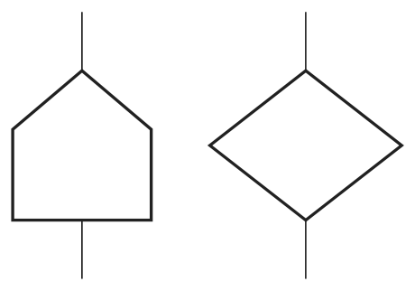
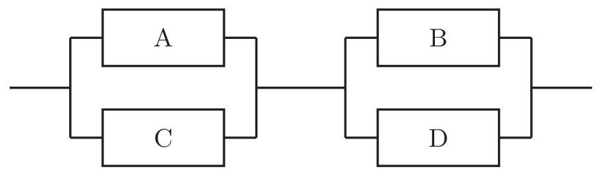
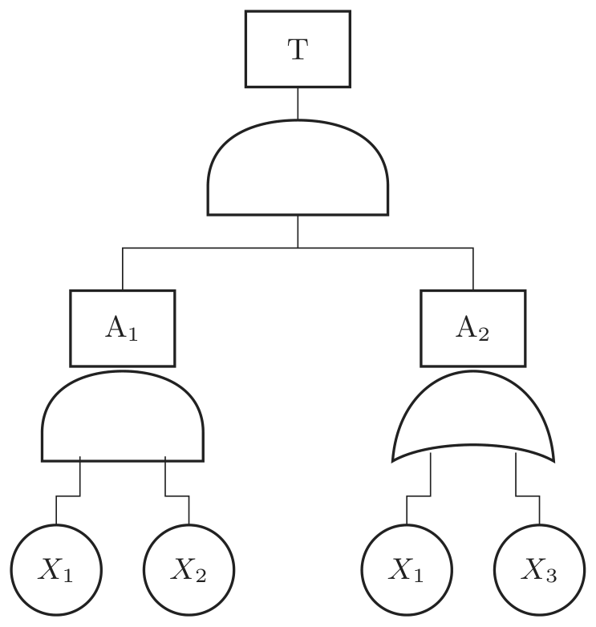

2021년 2회 · 산업안전기사 필기 CBT 기출 재배열 전사 검수본
지면(PDF)과 대조 검수용 · 수식은 KaTeX 렌더 · 총 문항
제1과목 안전관리론
001빈출도 ★☆☆난이도 1·쉬움개념형safe_A_2021_02_001
YㆍG 성격검사에서 「안전, 적응, 적극형」에 해당하는 형의 종류는?
정답: 4
해설
D형(우수 적응형)이다.
Y·G 성격검사의 다섯 유형
| 형 | 성격 | 적성 |
|---|
| A형(평균형) | 각 특성이 평균에 가깝다 | 조화형 |
| B형(우편형) | 정서 불안정 · 활동적 · 외향적 | 불안정·부적응·적극형 · 운전 부적당 |
| C형(좌편형) | 정서 안정 · 소극적 · 내향적 | 안정·소극형 |
| D형(우하형) | 정서 안정 · 활동적 · 사회 적응 | 안정·적응·적극형 · 이 문항 · 가장 바람직 |
| E형(좌하형) | 정서 불안정 · 소극적 | 불안정·부적응·수동형 |
오답 분석
① A형은 평균형이다.
② B형은 불안정·부적응·적극형이다.
③ C형은 안정·소극형이다.
관련 개념 · 암기
Y·G 성격검사「안정 · 적응 · 적극」 세 낱말이 다 좋은 쪽 이니
가장 바람직한 D형이다 —
B형은 「적극」은 같지만 앞의 둘이 나쁜 쪽이라 헷갈리기 쉽다.
◈ 암기 안정·적응·적극형은 D형.
🃏 관련 암기카드
분류: — > — > YG 성격검사 · 원본 2020.06.06
002빈출도 ★☆☆난이도 1·쉬움개념형safe_A_2021_02_002
산업안전보건법령상 근로자 안전ㆍ보건교육 기준 중 관리감독자 정기안전ㆍ보건교육의 교육내용으로 옳은 것은? (단, 산업안전보건법 및 일반관리에 관한 사항은 제외한다.)
① 산업안전 및 사고 예방에 관한 사항
② 사고 발생 시 긴급조치에 관한 사항
③ 건강증진 및 질병 예방에 관한 사항
④ 산업보건 및 직업병 예방에 관한 사항
정답: 4
해설
출제 당시 기준으로 산업보건 및 직업병 예방에 관한 사항이 관리감독자 정기교육 내용이었다.
교육과정별 내용 가르기
| 과정 | 내용 | |
|---|
| 관리감독자 정기교육 | 작업공정의 유해·위험과 재해 예방대책 · 표준안전작업방법 및 지도 요령 · 유해·위험 작업환경 관리 · 산업보건 및 직업병 예방 | ④ |
| 근로자 정기교육 | 산업안전 및 사고 예방 · 건강증진 및 질병 예방 · 산업보건 및 직업병 예방 | ①③ |
| 채용 시·작업내용 변경 시 교육 | 사고 발생 시 긴급조치 · 정리정돈 및 청소 · 물질안전보건자료 | ② |
오답 분석
① 산업안전 및 사고 예방은 근로자 정기교육 내용이다.
② 사고 발생 시 긴급조치는 채용 시 교육 내용이다.
③ 건강증진 및 질병 예방은 근로자 정기교육 내용이다.
관련 개념 · 암기
사업 내 안전보건교육의 내용관리감독자 교육에는 「공정 · 지도 · 관리」처럼 남을 이끄는 낱말이 붙는다 —
나머지 셋은 일하는 사람 본인이 알아야 할 것이다.
◈ 암기 산업보건·직업병 예방이 관리감독자 정기교육.
⚠ 주의사항 현행 규칙은 관리감독자 정기교육 내용을 「산업안전 및 사고 예방 · 산업보건 및 직업병 예방 · 위험성평가 · 유해·위험 작업환경 관리 · 표준안전작업방법 결정 및 지도·감독 요령」 등으로 정하고 있다. 이 문항은 개정 전 기준으로 출제되어 ④가 정답으로 처리되었다.
🃏 관련 암기카드
분류: 안전보건관리 체제 > 선임·자격 > 관리감독자 정기교육 · 원본 2018.03.04
003빈출도 ★☆☆난이도 2·보통개념형safe_A_2021_02_003
인간의 의식 수준을 5단계로 구분할 때 의식이 몽롱한 상태의 단계는?
① Phase Ⅰ
② Phase Ⅱ
③ Phase Ⅲ
④ Phase Ⅳ
정답: 1
해설
Phase Ⅰ이다. 의식이 흐릿하고 신뢰성이 아주 낮다.
의식수준의 5단계
| 단계 | 의식상태 | 신뢰성 |
|---|
| Phase 0 | 무의식 · 실신 | 0 |
| Phase Ⅰ | 의식이 몽롱하다 · 피로 · 졸음 | 0.9 이하 · 이 문항 |
| Phase Ⅱ | 정상이지만 이완되어 있다 · 휴식 · 단순 반복작업 | 0.99 ~ 0.99999 |
| Phase Ⅲ | 정상이고 명료하다 · 적극 활동 | 0.999999 이상 · 가장 신뢰성이 높다 |
| Phase Ⅳ | 흥분 · 당황 · 공포 | 0.9 이하 |
오답 분석
② Phase Ⅱ 는 이완된 정상 상태다.
③ Phase Ⅲ 은 가장 명료한 상태다.
④ Phase Ⅳ 는 흥분 상태다.
관련 개념 · 암기
의식수준의 단계Ⅲ이 가장 좋고 그 양쪽으로 내려간다 —
Ⅰ은 졸릴 때, Ⅳ는 당황할 때로 둘 다 신뢰성이 0.9 이하로 뚝 떨어진다.
◈ 암기 몽롱한 상태는 Phase Ⅰ.
🃏 관련 암기카드
⚠ 점검 요망: 오염 문항과 이웃함
분류: — > — > 의식수준의 단계 · 원본 2021.08.14
004빈출도 ★☆☆난이도 1·쉬움개념형safe_A_2021_02_004
작업을 하고 있을 때 긴급 이상상태 또는 돌발 사태가 되면 순간적으로 긴장하게 되어 판단능력의 둔화 또는 정지상태가 되는 것은?
① 의식의 우회
② 의식의 과잉
③ 의식의 단절
④ 의식의 수준저하
정답: 2
해설
의식의 과잉이다. 한 곳에 지나치게 쏠려 판단이 멎는다.
부주의의 다섯 현상
| 현상 | 무엇 | |
|---|
| 의식의 과잉 | 돌발사태에 긴장해 판단이 둔화·정지된다 | 이 문항 · 일점집중현상 |
| 의식의 우회 | 걱정거리 때문에 마음이 딴 데 가 있다 | |
| 의식의 단절 | 의식의 흐름이 잠시 끊긴다 | 특수한 질병 |
| 의식수준의 저하 | 흐릿한 의식 · 피로와 단조로움 | |
| 의식의 혼란 | 자극이 애매하거나 지나치게 강하다 | |
오답 분석
① 의식의 우회는 걱정거리로 마음이 딴 데 가 있는 것이다.
③ 의식의 단절은 의식의 흐름이 끊기는 것이다.
④ 의식수준의 저하는 흐릿한 의식 상태다.
관련 개념 · 암기
부주의의 현상「과잉」은 모자란 것이 아니라 한 곳에 몰린 것이다 —
돌발사태에 얼어붙는 것이 바로 그 상태다.
◈ 암기 돌발사태에 판단이 멎으면 의식의 과잉.
🃏 관련 암기카드
⚠ 점검 요망: 오염 문항과 이웃함
분류: 산업심리 > 부주의·착오 > 부주의의 현상 · 원본 2020.06.06
005빈출도 ★☆☆난이도 2·보통개념형safe_A_2021_02_005
다음 중 위험예지훈련의 문제해결 4라운드에 속하지 않는 것은?
① 현상파악
② 본질추구
③ 대책수립
④ 원인결정
정답: 4
해설
넷은 현상파악 · 본질추구 · 대책수립 · 목표설정이다. 「원인결정」은 없다.
위험예지훈련의 4라운드
| 라운드 | 이름 | 무엇 |
|---|
| 1R | 현상파악 | 어떤 위험이 숨어 있나 |
| 2R | 본질추구 | 이것이 위험의 요점이다 |
| 3R | 대책수립 | 당신이라면 어떻게 하겠는가 |
| 4R | 목표설정(행동목표) | 우리는 이렇게 한다 · 지적확인 |
오답 분석
① 현상파악은 1라운드다.
② 본질추구는 2라운드다.
③ 대책수립은 3라운드다.
관련 개념 · 암기
위험예지훈련의 4라운드마지막은 「무엇을 하기로 했나」를 정하는 목표설정이다 —
「원인결정」은 재해조사의 낱말이라 여기 끼지 않는다.
◈ 암기 현상파악 · 본질추구 · 대책수립 · 목표설정.
🃏 관련 암기카드
분류: 무재해운동 > 무재해·위험예지 > 위험예지훈련 · 원본 2011.06.12
006빈출도 ★☆☆난이도 1·쉬움개념형safe_A_2021_02_006
다음 중 산소결핍이 예상되는 맨홀 내에서 작업을 실시할 때 사고 방지 대책으로 적절하지 않은 것은?
① 작업 시작 전 및 작업 중 충분한 환기 실시
② 작업 장소의 입장 및 퇴장시 인원점검
③ 방독마스크의 보급과 착용 철저
④ 작업장과 외부와의 상시 연락을 위한 설비 설치
정답: 3
해설
방독마스크는 산소가 있어야 쓸 수 있다. 산소결핍 장소에서는 송기마스크나 공기호흡기를 써야 한다.
산소결핍 장소의 호흡용 보호구
| 보호구 | 쓸 수 있나 | |
|---|
| 송기마스크 | 쓸 수 있다 | 깨끗한 공기를 관으로 보내 준다 |
| 공기호흡기(SCBA) | 쓸 수 있다 | 공기통을 메고 들어간다 |
| 방독마스크 | 쓸 수 없다 | 둘레의 공기를 걸러 쓰는 것이라 산소가 없으면 무용지물 |
| 방진마스크 | 쓸 수 없다 | 같은 까닭 |
오답 분석
① 작업 전·중 충분한 환기는 옳은 대책이다.
② 입·퇴장 시 인원점검도 그렇다.
④ 외부와의 상시 연락 설비도 그렇다.
관련 개념 · 암기
산소결핍 작업의 보호구정화식(방독·방진)은 「거르는」 것이고 송기식은 「보내 주는」 것이다 —
산소가 없는 곳에서 걸러 봐야 여전히 산소가 없다.
◈ 암기 산소결핍에는 송기마스크, 방독마스크는 금물.
🃏 관련 암기카드
분류: 보호구 > 호흡·눈·귀 > 밀폐공간 작업 · 원본 2014.03.02
007빈출도 ★☆☆난이도 1·쉬움개념형safe_A_2021_02_007
다음 중 상황성 누발자의 재해 유발원인과 가장 거리가 먼 것은?
① 작업이 어렵기 때문에
② 기계설비의 결함이 있기 때문에
③ 심신에 근심이 있기 때문에
④ 도덕성이 결여되어 있기 때문에
정답: 4
해설
도덕성 결여는 소질성 누발자의 원인이다.
재해 누발자의 유형
| 유형 | 원인 | |
|---|
| 상황성 누발자 | 작업이 어렵다 · 기계설비의 결함 · 환경상 주의력 집중이 어렵다 · 심신에 근심이 있다 | ①②③ |
| 소질성 누발자 | 주의력 산만 · 저지능 · 도덕성 결여 · 흥분성 | ④ |
| 미숙성 누발자 | 기능이 미숙하고 환경에 익숙하지 않다 | |
| 습관성 누발자 | 재해 경험으로 신경과민 | |
오답 분석
① 작업이 어려운 것은 상황성 누발자의 원인이다.
② 기계설비의 결함도 그렇다.
③ 심신에 근심이 있는 것도 그렇다.
관련 개념 · 암기
재해 누발자의 유형「상황」은 그 사람 밖의 조건, 「소질」은 타고난 성질이다 —
도덕성은 사람 안쪽이라 소질성이다.
◈ 암기 도덕성 결여는 소질성 누발자.
🃏 관련 암기카드
분류: 산업심리 > 적성·검사 > 재해 누발자 · 원본 2012.05.20
008빈출도 ★☆☆난이도 1·쉬움개념형safe_A_2021_02_008
단조로운 업무가 장시간 지속될 때 작업자의 감각기능 및 판단능력이 둔화 또는 마비되는 현상을 무엇이라 하는가?
① 의식의 과잉
② 망각현상
③ 감각차단현상
④ 피로현상
정답: 3
해설
감각차단현상(감각박탈)이다. 들어오는 자극이 늘 같으면 감각이 멎는다.
비슷해 보이는 현상들
| 현상 | 무엇 | |
|---|
| 감각차단현상 | 단조로운 업무가 오래가면 감각과 판단이 둔화·마비된다 | 이 문항 |
| 의식의 과잉 | 돌발사태에 한 곳으로 쏠려 판단이 멎는다 | |
| 망각현상 | 배운 것을 잊는다 | |
| 피로현상 | 일을 계속해 몸과 마음의 능률이 떨어진다 | |
오답 분석
① 의식의 과잉은 돌발사태에 판단이 멎는 것이다.
② 망각현상은 배운 것을 잊는 것이다.
④ 피로현상은 능률이 떨어지는 것이다.
관련 개념 · 암기
감각차단현상「단조로움」이 원인이면 감각차단이다 —
피로는 일의 양, 감각차단은 일의 단조로움에서 온다는 데서 갈린다.
◈ 암기 단조로운 업무의 감각 마비는 감각차단현상.
🃏 관련 암기카드
분류: 산업심리 > 부주의·착오 > 감각차단현상 · 원본 2012.05.20
009빈출도 ★☆☆난이도 1·쉬움개념형safe_A_2021_02_009
다음 중 리더십 이론에서 성공적인 리더는 어떤 특성을 가지고 있는가를 연구하는 이론은?
① 특성이론
② 행동이론
③ 상황적합성이론
④ 수명주기이론
정답: 1
해설
특성이론이다. 「어떤 사람인가」를 본다.
리더십 이론의 흐름
| 이론 | 무엇을 보나 | |
|---|
| 특성이론 | 성공한 리더가 지닌 자질과 특성 | 어떤 사람인가 · 이 문항 |
| 행동이론 | 리더가 실제로 어떻게 행동하나 | 관리그리드 |
| 상황적합성이론 | 상황에 따라 알맞은 리더십이 다르다 | 피들러 |
| 수명주기이론 | 부하의 성숙도에 따라 리더십을 바꾼다 | 허시·블랜차드 |
오답 분석
② 행동이론은 리더의 행동을 본다.
③ 상황적합성이론은 상황에 따른 적합성을 본다.
④ 수명주기이론은 부하의 성숙도에 따른 변화를 본다.
관련 개념 · 암기
리더십 이론「특성 · 행동 · 상황」 순으로 발전 했다 —
타고난 자질을 찾다가(특성), 행동을 보다가(행동), 결국 때와 곳에 달렸다(상황)로 옮겨 갔다.
◈ 암기 리더의 자질을 보면 특성이론.
🃏 관련 암기카드
분류: 산업심리 > 집단·리더십 > 리더십 이론 · 원본 2012.03.04
010빈출도 ★☆☆난이도 1·쉬움개념형safe_A_2021_02_010
다음 중 관리감독자를 대상으로 교육하는 TWI의 교육내용이 아닌 것은?
① 문제해결훈련
② 작업지도훈련
③ 인간관계훈련
④ 작업방법훈련
정답: 1
해설
TWI 는 JIT · JMT · JRT · JST 넷이다. 「문제해결훈련」은 들지 않는다.
TWI 의 네 과정
| 약칭 | 이름 | |
|---|
| JIT | 작업지도훈련(Job Instruction Training) | 가르치는 법 |
| JMT | 작업방법훈련(Job Method Training) | 개선하는 법 |
| JRT | 인간관계훈련(Job Relations Training) | 사람 다루는 법 |
| JST | 작업안전훈련(Job Safety Training) | 안전하게 하는 법 |
| 문제해결훈련 | TWI 가 아니다 | |
오답 분석
② 작업지도훈련은 TWI 의 하나다.
③ 인간관계훈련도 그렇다.
④ 작업방법훈련도 그렇다.
관련 개념 · 암기
TWI(Training Within Industry)넷 모두 「작업」이나 「인간관계」로 현장의 일을 가리킨다 —
「문제해결」은 두루뭉술해 TWI 의 이름과 결이 다르다.
◈ 암기 TWI 는 지도·방법·관계·안전 넷.
🃏 관련 암기카드
분류: 안전보건관리 체제 > 선임·자격 > TWI · 원본 2013.03.10
011빈출도 ★☆☆난이도 1·쉬움개념형safe_A_2021_02_011
다음 중 안전관리조직의 목적과 가장 거리가 먼 것은?
① 조직적인 사고예방활동
② 위험제거기술의 수준 향상
③ 재해손실의 산정 및 작업통제
④ 조직간 종적ㆍ횡적 신속한 정보처리와 유대강화
정답: 3
해설
재해손실을 셈하고 작업을 통제하는 것은 조직의 목적이 아니다. 재해를 막는 것이 목적이다.
안전관리조직의 목적
| 목적 | |
|---|
| 조직적인 사고예방활동 | |
| 위험제거기술의 수준 향상 | |
| 조직 간 종적·횡적 신속한 정보처리와 유대강화 | |
| 재해손실의 산정 및 작업통제 | 목적이 아니다 |
오답 분석
① 조직적인 사고예방활동은 목적이다.
② 위험제거기술의 수준 향상도 그렇다.
④ 신속한 정보처리와 유대강화도 그렇다.
관련 개념 · 암기
안전관리조직의 목적안전조직은 「미리 막기」 위한 것이다 —
손실을 셈하는 일은 이미 난 뒤의 이야기라 목적과 방향이 반대다.
◈ 암기 손실 산정은 안전조직의 목적이 아니다.
🃏 관련 암기카드
분류: 안전보건관리 체제 > 안전조직 > 안전관리조직 · 원본 2013.03.10
012빈출도 ★☆☆난이도 2·보통개념형safe_A_2021_02_012
A 사업장에서 58건의 경상해가 발생하였다면 하인리히의 재해구성비율을 적용할 때 이 사업장의 재해구성 비율을 올바르게 나열한 것은? (단, 구성은 중상해 : 경상해 : 무상해 순서이다.)
① 2 : 58 : 600
② 3 : 58 : 660
③ 6 : 58 : 330
④ 10 : 58 : 600
정답: 1
해설
하인리히는 1 : 29 : 300이다. 경상해 58 = 29 × 2이므로 모두 2배 해 2 : 58 : 600이다.
재해구성비율
| 이론 | 비율 | |
|---|
| 하인리히 | 1 : 29 : 300 | 중상 : 경상 : 무상해 · 합계 330 |
| 버드 | 1 : 10 : 30 : 600 | 중상 : 경상 : 물적손해 : 무상해무손실 |
| 이 문항 | 58 ÷ 29 = 2 배 → 2 : 58 : 600 | |
오답 분석
② 3 : 58 : 660 은 배수가 맞지 않는다.
③ 6 : 58 : 330 은 하인리히 비율과 어긋난다.
④ 10 : 58 : 600 도 그렇다.
관련 개념 · 암기
하인리히의 재해구성비율가운데 수 29 를 기준으로 배수를 잡는다 —
58 은 29 의 두 배 이니 앞뒤도 두 배다.
330 이라는 합계 숫자에 끌리면 ③을 고르게 된다.
◈ 암기 하인리히 1 : 29 : 300.
🃏 관련 암기카드
분류: 안전보건교육 > 교육계획·평가 > 재해구성비율 · 원본 2011.03.20
013빈출도 ★☆☆난이도 2·보통개념형safe_A_2021_02_013
참가자 다수인 경우에 전원을 토의에 참가시키기 위한 방법으로 소집단을 구성하여 회의를 진행 시키는데 일명 6-6회의라고도 하는 것은?
① Symposium
② Buzz session
③ Forum
④ Panel discussion
정답: 2
해설
버즈 세션이다. 6명이 6분씩 이야기해 6-6회의라 한다.
토의식 교육의 갈래
| 방법 | 무엇 | |
|---|
| 버즈 세션 | 6명씩 소집단으로 나눠 6분간 토의 | 6-6 회의 · 이 문항 |
| 심포지엄 | 여러 강사가 발표한 뒤 청중이 질문 | |
| 포럼 | 짧은 발표 뒤 청중이 질문하며 진행 | |
| 패널 디스커션 | 4 ~ 5명의 패널이 토의한 뒤 청중과 질의응답 | |
| 케이스 메소드 | 사례를 놓고 토의 | |
오답 분석
① 심포지엄은 여러 강사가 발표하는 방식이다.
③ 포럼은 발표 뒤 청중이 질문하며 이끄는 방식이다.
④ 패널 디스커션은 패널끼리 토의하는 방식이다.
관련 개념 · 암기
버즈 세션「버즈(buzz)」는 벌이 윙윙거리는 소리다 —
여러 소집단이 한꺼번에 떠드는 소리에서 온 이름이다.
6-6 이라는 숫자가 곧 6명 6분이다.
◈ 암기 6-6 회의는 버즈 세션.
🃏 관련 암기카드
분류: 안전보건교육 > 토의법 > 토의법 · 원본 2011.03.20
014빈출도 ★☆☆난이도 2·보통개념형safe_A_2021_02_014
학습을 자극(Stimulus)에 의한 반응(Response)으로 보는 이론에 해당하는 것은?
① 장설(Field Theory)
② 통찰설(Insight Theory)
③ 기호형태설(Sign-gestalt Theory)
④ 시행착오설(Trial and Error Theory)
정답: 4
해설
시행착오설이 자극-반응(S-R) 이론이다.
학습이론의 두 갈래
| 갈래 | 이론 | |
|---|
| S-R 이론 | 시행착오설(손다이크) · 조건반사설(파블로프) · 조작적 조건화설(스키너) | 행동주의 |
| 인지 이론(형태설) | 통찰설(쾰러) · 장설(레빈) · 기호형태설(톨만) | 인지주의 |
오답 분석
① 장설은 레빈의 인지 이론이다.
② 통찰설은 쾰러의 인지 이론이다.
③ 기호형태설은 톨만의 인지 이론이다.
관련 개념 · 암기
학습이론「~설」 앞에 「장 · 통찰 · 기호형태」가 붙으면 모두 인지 이론이다 —
남는 하나가 S-R이다.
◈ 암기 시행착오설은 S-R 이론.
🃏 관련 암기카드
분류: 안전보건교육 > 학습이론 > 학습이론 · 원본 2021.05.15
015빈출도 ★☆☆난이도 2·보통개념형safe_A_2021_02_015
다음 중 방독마스크의 종류와 시험가스가 잘못 연결된 것은?
① 할로겐용 : 수소가스(H2)
② 암모니아용 : 암모니아가스(NH3)
③ 유기화합물용 : 시클로헥산(C6H12)
④ 시안화수소용 : 시안화수소가스(HCN)
정답: 1
해설
할로겐용 시험가스는 염소가스(Cl₂)다. 수소가스가 아니다.
방독마스크의 종류·시험가스·정화통 색
| 종류 | 시험가스 | 정화통 색 |
|---|
| 유기화합물용 | 시클로헥산(C₆H₁₂) · 디메틸에테르 · 이소부탄 | 갈색 |
| 할로겐용 | 염소가스(Cl₂) | 회색 · 「수소가스」가 아니다 |
| 황화수소용 | 황화수소가스(H₂S) | 회색 |
| 시안화수소용 | 시안화수소가스(HCN) | 회색 |
| 아황산용 | 아황산가스(SO₂) | 노란색 |
| 암모니아용 | 암모니아가스(NH₃) | 녹색 |
오답 분석
② 암모니아용의 시험가스는 암모니아가스가 맞다.
③ 유기화합물용의 시클로헥산도 맞다.
④ 시안화수소용의 시안화수소가스도 맞다.
관련 개념 · 암기
방독마스크의 종류와 시험가스대부분 이름과 시험가스가 그대로 이어진다 —
할로겐용만 이름과 다른 「염소」라 여기만 외우면 된다.
정화통 색은 「유갈 · 암녹 · 아황노 · 나머지 회색」이다.
◈ 암기 할로겐용 시험가스는 염소.
🃏 관련 암기카드
분류: 보호구 > 호흡·눈·귀 > 방독마스크 · 원본 2012.05.20
016빈출도 ★☆☆난이도 1·쉬움개념형safe_A_2021_02_016
일상점검 중 작업 전에 수행되는 내용과 가장 거리가 먼 것은?
① 주변의 정리ㆍ정돈
② 생산품질의 이상 유무
③ 주변의 청소 상태
④ 설비의 방호장치 점검
정답: 2
해설
생산품질은 안전점검이 아니라 품질관리의 일이다.
작업 전 일상점검의 내용
| 내용 | |
|---|
| 주변의 정리·정돈 상태 | |
| 주변의 청소 상태 | |
| 설비의 방호장치 점검 | |
| 설비의 이상 유무와 보호구 착용 상태 | |
| 생산품질의 이상 유무 | 품질관리의 몫 |
오답 분석
① 주변의 정리·정돈은 작업 전 점검 내용이다.
③ 주변의 청소 상태도 그렇다.
④ 설비의 방호장치 점검도 그렇다.
관련 개념 · 암기
일상점검안전점검은 「다치지 않을 준비가 됐나」를 본다 —
물건이 잘 만들어졌나는 다른 이야기다.
◈ 암기 생산품질은 안전점검 항목이 아니다.
🃏 관련 암기카드
분류: 안전점검·인증 > 안전점검 > 안전점검 · 원본 2013.08.18
017빈출도 ★☆☆난이도 2·보통개념형safe_A_2021_02_017
버드(Bird)의 신 도미노이론 5단계에 해당하지 않는 것은?
① 제어부족(관리)
② 직접원인(징후)
③ 간접원인(평가)
④ 기본원인(기원)
정답: 3
해설
버드의 다섯은 제어부족 → 기본원인 → 직접원인 → 사고 → 상해다. 「간접원인」은 없다.
하인리히와 버드의 도미노
| 하인리히 | 버드 |
|---|
| 1단계 | 사회적 환경과 유전적 요소 | 제어부족(관리) |
| 2단계 | 개인적 결함 | 기본원인(기원) |
| 3단계 | 불안전한 행동과 불안전한 상태 | 직접원인(징후) |
| 4단계 | 사고 | 사고(접촉) |
| 5단계 | 재해(상해) | 상해(손실) |
| 제거할 단계 | 3단계 | 1단계 — 관리 |
오답 분석
① 제어부족(관리)은 1단계다.
② 직접원인(징후)은 3단계다.
④ 기본원인(기원)은 2단계다.
관련 개념 · 암기
버드의 신 도미노 이론버드는 「관리 → 기원 → 징후 → 접촉 → 손실」이다 —
하인리히가 3단계(불안전 행동·상태)를 없애라 했다면, 버드는 1단계(관리)를 고치라고 한다.
◈ 암기 버드는 제어부족·기본원인·직접원인·사고·상해.
🃏 관련 암기카드
분류: 재해조사 및 분석 > 재해 발생 이론 > 도미노 이론 · 원본 2022.03.05
018빈출도 ★☆☆난이도 3·어려움계산형safe_A_2021_02_018
A사업장의 조건이 다음과 같을 때 A사업장에서 연간재해발생으로 인한 근로손실일수는?
- 강도율: 0.4
- 근로자 수: 1000명
- 연근로시간수: 2400시간
정답: 3
해설
$\text{강도율} = \dfrac{\text{근로손실일수}}{\text{연근로시간수}} \times 1 {,} 000$$\text{근로손실일수} = 0.4 \times \dfrac{1 {,} 000 \times 2 {,} 400}{1 {,} 000} = 960 \, \text{일}$
강도율
| 식 | $\text{강도율} = \dfrac{\text{근로손실일수}}{\text{연근로시간수}} \times 1 {,} 000$ |
| 총 연근로시간 | 1,000명 × 2,400시간 = 2,400,000시간 |
| 근로손실일수 | 0.4 × 2,400,000 ÷ 1,000 = 960일 |
| 뜻 | 연 1,000시간당 잃은 날수 |
오답 분석
① 480 은 근로시간을 절반으로 잡은 값이다.
② 720 은 계산과 맞지 않는다.
④ 1440 도 그렇다.
관련 개념 · 암기
강도율강도율은 「1,000시간당 며칠을 잃었나」다 —
총 근로시간 240만 시간은 1,000시간짜리가 2,400묶음 이니 0.4 × 2,400 = 960 으로 곧장 나온다.
◈ 암기 근로손실일수 = 강도율 × 연근로시간 ÷ 1,000.
🃏 관련 암기카드
⚠ 점검 요망: 오염 문항과 이웃함
분류: 재해조사 및 분석 > 재해율 계산 > 강도율 · 원본 2021.08.14
019빈출도 ★☆☆난이도 2·보통개념형safe_A_2021_02_019
다음 중 재해예방의 4원칙과 관련이 가장 적은 것은?
① 모든 재해의 발생 원인은 우연적인 상황에서 발생한다.
② 재해손실은 사고가 발생할 때 사고 대상의 조건에 따라 달라진다.
③ 재해예방을 위한 가능한 안전대책은 반드시 존재한다.
④ 재해는 원칙적으로 원인만 제거되면 예방이 가능하다.
정답: 1
해설
원인은 우연이 아니라 반드시 있다. 우연한 것은 원인이 아니라 손실의 크기다.
재해예방의 4원칙
| 원칙 | | |
|---|
| 손실우연의 원칙 | 사고와 손실의 크기는 우연히 정해진다 | ② |
| 원인계기(연계)의 원칙 | 재해에는 반드시 원인이 있다 | ①이 뒤집어 놓은 것 |
| 예방가능의 원칙 | 원인을 없애면 막을 수 있다 | ④ |
| 대책선정의 원칙 | 원인이 있으면 대책도 반드시 있다 | ③ |
오답 분석
② 손실이 조건에 따라 달라진다는 것은 손실우연의 원칙이다.
③ 안전대책이 반드시 존재한다는 것은 대책선정의 원칙이다.
④ 원인을 없애면 막을 수 있다는 것은 예방가능의 원칙이다.
관련 개념 · 암기
재해예방의 4원칙우연한 것은 「손실」이고 필연인 것은 「원인」이다 —
①은 그 둘을 바꿔 놓았다.
◈ 암기 손실은 우연, 원인은 필연.
🃏 관련 암기카드
⚠ 점검 요망: 오염 문항과 이웃함
분류: 재해조사 및 분석 > 재해 발생 이론 > 재해예방의 4원칙 · 원본 2020.08.22
020빈출도 ★☆☆난이도 2·보통개념형safe_A_2021_02_020
국제노동기구(ILO)의 산업재해 정도구분에서 부상 결과 근로자가 신체장해등급 제12급 판정을 받았다면 이는 어느 정도의 부상을 의미하는가?
① 영구 전노동불능
② 영구 일부노동불능
③ 일시 전노동불능
④ 일시 일부노동불능
정답: 2
해설
신체장해등급 4 ~ 14급은 영구 일부노동불능이다.
ILO 의 산업재해 정도구분
| 구분 | 등급 | |
|---|
| 사망 | | 근로손실일수 7,500일 |
| 영구 전노동불능 | 신체장해등급 1 ~ 3급 | 7,500일 |
| 영구 일부노동불능 | 신체장해등급 4 ~ 14급 | 이 문항 — 12급 · 등급별 일수 |
| 일시 전노동불능 | | 의사의 진단으로 일정 기간 노동을 못 한다 |
| 일시 일부노동불능 | | 가벼운 작업만 가능 |
오답 분석
① 영구 전노동불능은 1 ~ 3급이다.
③ 일시 전노동불능은 장해가 남지 않은 휴업재해다.
④ 일시 일부노동불능도 그렇다.
관련 개념 · 암기
ILO 의 재해 정도구분「영구」인가 「일시」인가는 장해가 남았는가로,
「전」인가 「일부」인가는 1 ~ 3급인가 4 ~ 14급인가로 갈린다.
12급은 장해가 남았으니 영구, 3급을 넘으니 일부다.
◈ 암기 1 ~ 3급은 영구 전노동불능, 4 ~ 14급은 영구 일부노동불능.
🃏 관련 암기카드
⚠ 점검 요망: 오염 문항과 이웃함
분류: 재해조사 및 분석 > 상해 분류 > ILO 재해 정도구분 · 원본 2019.03.03
제2과목 인간공학 및 시스템안전공학
021빈출도 ★☆☆난이도 2·보통개념형safe_A_2021_02_021
FTA에서 사용하는 수정게이트의 종류에서 3개의 입력현상 중 2개가 발생할 경우 출력이 생기는 것은?
① 우선적 AND 게이트
② 조합 AND 게이트
③ 위험지속기호
④ 배타적 OR 게이트
정답: 2
해설
조합 AND 게이트다. 「n개 중 k개가 일어나면」이라는 조건이 붙는다.
FTA 의 수정게이트
| 게이트 | 조건 | |
|---|
| 조합 AND 게이트 | 여러 입력 가운데 정해진 개수가 일어나면 출력 | 이 문항 · 3개 중 2개 |
| 우선적 AND 게이트 | 입력이 정해진 순서로 일어날 때만 출력 | |
| 배타적 OR 게이트 | 입력 가운데 하나만 일어날 때 출력 | 둘 이상이면 출력 없음 |
| 위험지속기호 | 입력이 일정 시간 이어져야 출력 | |
| 억제 게이트 | 조건이 만족될 때만 출력 | 수정기호 안에 조건을 적는다 |
오답 분석
① 우선적 AND 게이트는 순서 조건이 붙은 게이트다.
③ 위험지속기호는 시간 조건이 붙은 것이다.
④ 배타적 OR 게이트는 하나만 일어날 때 출력한다.
관련 개념 · 암기
FTA 의 수정게이트「개수」면 조합, 「순서」면 우선적, 「시간」이면 위험지속, 「하나만」이면 배타적이다 —
네 조건이 하나씩 걸려 있다.
◈ 암기 3개 중 2개면 조합 AND 게이트.
🃏 관련 암기카드
분류: 결함수분석 > FTA 기호·구조 > FTA 수정게이트 · 원본 2013.03.10
022빈출도 ★☆☆난이도 1·쉬움개념형safe_A_2021_02_022
FTA(Fault tree analysis)의 기호 중 다음의 사상기호에 적합한 각각의 명칭은?

① 전이기호와 통상사상
② 통상사상과 생략사상
③ 통상사상과 전이기호
④ 생략사상과 전이기호
정답: 2
해설
왼쪽 집 모양(오각형)은 통상사상, 오른쪽 마름모는 생략사상이다.
FTA 의 사상기호
| 기호 | 이름 | 무엇 |
|---|
| 직사각형 | 결함사상 | 정상사상과 중간사상 |
| 원 | 기본사상 | 더 나눌 수 없는 밑바닥 사상 |
| 집 모양(오각형) | 통상사상 | 통상 발생이 예상되는 사상 |
| 마름모 | 생략사상 | 정보가 부족해 더 나누지 않은 사상 |
| 삼각형 | 전이기호 | 다른 곳으로 이어진다 |
오답 분석
① 전이기호는 삼각형이다.
③ 오른쪽 마름모는 전이기호가 아니라 생략사상이다.
④ 왼쪽 오각형이 전이기호인 것도 아니다.
관련 개념 · 암기
FTA 의 사상기호「집은 늘 있으니 통상사상, 마름모는 생략」으로 묶는다 —
삼각형만 전이기호라 세 모양이 겹치지 않는다.
◈ 암기 집 모양은 통상사상, 마름모는 생략사상.
🃏 관련 암기카드
분류: 결함수분석 > FTA 기호·구조 > FTA 사상기호 · 원본 2017.08.26
023빈출도 ★☆☆난이도 2·보통개념형safe_A_2021_02_023
신호검출이론에 대한 설명으로 틀린 것은?
① 신호와 소음을 쉽게 식별할 수 없는 상황에 적용된다.
② 일반적인 상황에서 신호 검출을 간섭하는 소음이 있다.
③ 통제된 실험실에서 얻은 결과를 현장에 그대로 적용 가능하다.
④ 긍정(hit), 허위(false alarm), 누락(miss), 부정(correct rejection)의 네 가지 결과로 나눌 수 있다.
정답: 3
해설
실험실 결과를 현장에 그대로 옮길 수는 없다. 현장의 소음과 조건이 다르기 때문이다.
신호검출이론(SDT)의 네 가지 결과
| 신호가 있다 | 신호가 없다 |
|---|
| 있다고 판단 | 긍정(hit) | 허위경보(false alarm) |
| 없다고 판단 | 누락(miss) | 올바른 부정(correct rejection) |
| 쓰이는 곳 | 신호와 소음을 쉽게 가릴 수 없는 상황 | |
| 한계 | 실험실 결과를 현장에 그대로 적용할 수 없다 | ③이 틀린 까닭 |
오답 분석
① 신호와 소음을 쉽게 식별할 수 없는 상황에 쓰이는 것은 맞다.
② 신호 검출을 방해하는 소음이 있는 것도 맞다.
④ 네 가지 결과로 나누는 것도 맞다.
관련 개념 · 암기
신호검출이론「실험실 결과를 그대로 현장에」라는 말은 어느 분야에서든 틀린 보기다 —
통제된 조건과 현장은 다르다.
◈ 암기 실험실 결과를 현장에 그대로 옮길 수 없다.
🃏 관련 암기카드
⚠ 점검 요망: 오염 문항과 이웃함
분류: 결함수분석 > FTA 기호·구조 > 신호검출이론 · 원본 2017.05.07
024빈출도 ★☆☆난이도 2·보통개념형safe_A_2021_02_024
다음 중 동작경제의 원칙에 있어 「신체사용에 관한 원칙」에 해당하지 않는 것은?
① 두 손의 동작은 동시에 시작해서 동시에 끝나야 한다.
② 손의 동작은 유연하고 연속적인 동작이어야 한다.
③ 공구, 재료 및 제어장치는 사용하기 가까운 곳에 배치해야 한다.
④ 동작이 급작스럽게 크게 바뀌는 직선 동작은 피해야 한다.
정답: 3
해설
가까운 곳에 배치 하라는 것은 작업장 배치에 관한 원칙이다.
동작경제의 3원칙
| 원칙 | 내용 | |
|---|
| 신체사용에 관한 원칙 | 두 손은 동시에 시작하고 동시에 끝낸다 · 두 손이 동시에 쉬지 않게 한다 · 동작은 유연하고 연속적으로 · 급격한 방향 전환은 피한다 | ①②④ |
| 작업장 배치에 관한 원칙 | 공구·재료·제어장치는 가까운 곳에 · 정해진 자리에 · 중력식 공급상자를 쓴다 · 조명을 알맞게 | ③ |
| 공구 및 설비의 설계에 관한 원칙 | 두 공구는 하나로 합친다 · 발로 할 수 있으면 발에 맡긴다 · 손잡이는 손에 닿는 면적을 넓게 | |
오답 분석
① 두 손을 동시에 시작하고 끝내는 것은 신체사용의 원칙이다.
② 유연하고 연속적인 동작도 그렇다.
④ 급격한 방향 전환을 피하는 것도 그렇다.
관련 개념 · 암기
동작경제의 원칙「몸을 어떻게 쓰나」와 「물건을 어디에 두나」를 가른다 —
「배치」라는 낱말이 나오면 작업장 배치 쪽이다.
◈ 암기 가까운 곳에 배치는 작업장 배치의 원칙.
🃏 관련 암기카드
분류: 인간공학 개요 > 동작경제·실험 > 동작경제의 원칙 · 원본 2015.05.31
025빈출도 ★☆☆난이도 3·어려움계산형safe_A_2021_02_025
불(Bool) 대수의 정리를 나타낸 관계식 중 틀린 것은?
① Aㆍ0 = 0
② A + 1 = 1
③ A ㆍ Ā = 1
④ A(A + B) = A
정답: 3
해설
$A \cdot \bar{A} = 0$이다. A 와 A 아님은 동시에 참일 수 없다.
불 대수의 기본 정리
| 정리 | | |
|---|
| $A \cdot 0 = 0$ | 무엇과 곱해도 0 | |
| $A \cdot 1 = A$ | | |
| $A + 1 = 1$ | 무엇을 더해도 1 | |
| $A + 0 = A$ | | |
| $A \cdot \bar{A} = 0$ | 상보의 법칙 | 「1」이 아니다 |
| $A + \bar{A} = 1$ | | |
| $A ( A + B ) = A$ | 흡수법칙 | |
오답 분석
① A · 0 = 0 은 옳다.
② A + 1 = 1 도 옳다.
④ A(A + B) = A 는 흡수법칙으로 옳다.
관련 개념 · 암기
불 대수의 정리곱(AND)은 「둘 다 참이라야」 이니
A 와 A 아님을 곱하면 0이다 —
합(OR)이라야 1이 된다.
「·」과 「+」를 바꿔 놓은 함정이다.
◈ 암기 A · Ā = 0, A + Ā = 1.
🃏 관련 암기카드
⚠ 그림 보강 필요
분류: — > — > 불 대수 · 원본 2022.04.24
026빈출도 ★☆☆난이도 1·쉬움개념형safe_A_2021_02_026
상황해석을 잘못하거나 목표를 잘못 설정하여 발생하는 인간의 오류 유형은?
① 실수(Slip)
② 착오(Mistake)
③ 위반(Violation)
④ 건망증(Lapse)
정답: 2
해설
착오(Mistake)다. 계획 자체가 틀린 것이다.
라스무센(Rasmussen)의 분류
| 유형 | 무엇 | |
|---|
| 착오(Mistake) | 상황해석을 잘못하거나 목표를 잘못 세웠다 | 계획이 틀렸다 · 이 문항 |
| 실수(Slip) | 하려던 것과 다르게 행동했다 | 계획은 맞았다 |
| 건망증(Lapse) | 해야 할 것을 잊었다 | 기억의 실패 |
| 위반(Violation) | 알면서도 규칙을 어겼다 | 고의 |
오답 분석
① 실수(Slip)는 계획은 맞았으나 행동이 어긋난 것이다.
③ 위반(Violation)은 알면서 규칙을 어긴 것이다.
④ 건망증(Lapse)은 잊어버린 것이다.
관련 개념 · 암기
휴먼 에러의 분류계획이 틀렸으면 착오, 계획은 맞고 행동이 어긋났으면 실수다 —
「목표를 잘못 설정」이라는 말이 곧 계획의 잘못이다.
◈ 암기 목표를 잘못 세우면 착오(Mistake).
🃏 관련 암기카드
⚠ 점검 요망: 오염 문항과 이웃함
분류: 결함수분석 > FTA 기호·구조 > 휴먼 에러의 분류 · 원본 2022.04.24
027빈출도 ★☆☆난이도 2·보통개념형safe_A_2021_02_027
다음 중 좌식작업이 가장 적합한 작업은?
① 정밀 조립 작업
② 4.5kg 이상의 중량물을 다루는 작업
③ 작업장이 서로 떨어져 있으며 작업장 간 이동이 잦은 작업
④ 작업자의 정면에서 매우 높거나 낮은 곳으로 손을 자주 뻗어야 하는 작업
정답: 1
해설
정밀 조립은 몸이 흔들리지 않아야 하므로 앉아서 한다.
입식과 좌식의 선택
| 좌식(앉아서) | 입식(서서) |
|---|
| 무게 | 가벼운 것 · 4.5kg 미만 | 무거운 것 · 4.5kg 이상 |
| 정밀도 | 정밀한 조립·검사 | 거친 작업 |
| 움직임 | 한자리에 머문다 | 작업장 사이를 오간다 |
| 손의 범위 | 좁은 범위 | 높거나 낮은 곳까지 뻗는다 |
| 피로 | 오래 해도 덜 지친다 | 다리와 허리가 지친다 |
오답 분석
② 4.5kg 이상의 중량물은 서서 다룬다.
③ 작업장 간 이동이 잦으면 서서 한다.
④ 높거나 낮은 곳으로 손을 뻗어야 하면 서서 한다.
관련 개념 · 암기
좌식작업과 입식작업앉으면 몸이 안정되지만 움직임과 힘이 제한 된다 —
「정밀 · 가벼움 · 한자리」면 앉고 「힘 · 이동 · 넓은 범위」면 선다.
◈ 암기 정밀 조립은 좌식작업.
🃏 관련 암기카드
⚠ 점검 요망: 오염 문항과 이웃함
분류: — > — > 작업자세 · 원본 2022.04.24
028빈출도 ★☆☆난이도 1·쉬움개념형safe_A_2021_02_028
안전성 평가 항목에 해당하지 않은 것은?
① 작업자에 대한 평가
② 기계설비에 대한 평가
③ 작업공정에 대한 평가
④ 레이아웃에 대한 평가
정답: 1
해설
안전성 평가는 설비와 공정, 배치를 본다. 사람을 평가하는 항목은 없다.
안전성 평가의 항목
| 항목 | |
|---|
| 기계설비에 대한 평가 | |
| 작업공정에 대한 평가 | |
| 레이아웃(배치)에 대한 평가 | |
| 건물·입지조건에 대한 평가 | |
| 작업자에 대한 평가 | 항목이 아니다 |
오답 분석
② 기계설비에 대한 평가는 항목이다.
③ 작업공정에 대한 평가도 그렇다.
④ 레이아웃에 대한 평가도 그렇다.
관련 개념 · 암기
안전성 평가의 항목안전성 평가는 「설비와 공정이 안전하게 만들어졌나」를 본다 —
사람의 능력이나 태도를 재는 것이 아니다.
◈ 암기 작업자 평가는 안전성 평가 항목이 아니다.
🃏 관련 암기카드
⚠ 점검 요망: 오염 문항과 이웃함
분류: 시스템 위험분석 > 시스템 안전 일반 > 안전성 평가 · 원본 2016.08.21
029빈출도 ★☆☆난이도 1·쉬움개념형safe_A_2021_02_029
위험 및 운전성 검토(HAZOP)에서 사용되는 가아드 워드 중에서 성질상의 감소를 의미하는 것은?
① Part of
② More less
③ No/Not
④ Other than
정답: 1
해설
Part of다. 「일부만」이라는 뜻으로 성질상의 감소를 가리킨다.
HAZOP 의 가이드워드
| 가이드워드 | 뜻 | |
|---|
| No / Not | 설계 의도가 전혀 이루어지지 않았다 | 완전한 부정 |
| More / Less | 양적인 증가 또는 감소 | |
| As well as | 성질상의 증가 | 의도한 것 말고 딴 것도 함께 |
| Part of | 성질상의 감소 | 일부만 이루어졌다 · 이 문항 |
| Reverse | 설계 의도와 반대 | |
| Other than | 완전히 다른 것으로 바뀌었다 | |
오답 분석
② More/Less 는 양적인 증가·감소다.
③ No/Not 은 완전한 부정이다.
④ Other than 은 완전한 대체다.
관련 개념 · 암기
HAZOP 의 가이드워드「양」이면 More/Less, 「성질」이면 As well as / Part of로 짝을 이룬다 —
성질이 늘면 As well as, 줄면 Part of다.
◈ 암기 성질상의 감소는 Part of.
🃏 관련 암기카드
⚠ 점검 요망: 오염 문항과 이웃함
분류: 시스템 위험분석 > HAZOP·기타 > HAZOP 가이드워드 · 원본 2016.05.08
030빈출도 ★☆☆난이도 2·보통개념형safe_A_2021_02_030
시스템의 수명곡선(욕조곡선)에 있어서 디버깅(Debugging)에 관한 설명으로 옳은 것은?
① 초기 고장의 결함을 찾아 고장률을 안정시키는 과정이다.
② 우발 고장의 결함을 찾아 고장률을 안정시키는 과정이다.
③ 마모 고장의 결함을 찾아 고장률을 안정시키는 과정이다.
④ 기계 결함을 발견하기 위해 동작시험을 하는 기간이다.
정답: 1
해설
디버깅은 초기 고장기의 대책이다.
욕조곡선의 세 기간
| 기간 | 고장률 | 대책 |
|---|
| 초기 고장기 | 감소형(DFR) | 디버깅 · 번인(burn-in) · 이 문항 |
| 우발 고장기 | 일정형(CFR) | 예방보전이 어렵다 · 사후보전 |
| 마모 고장기 | 증가형(IFR) | 예방보전 · 부품 교체 |
| 번인과 디버깅 | 번인은 미리 돌려 결함을 드러내는 「기간」 | 디버깅은 결함을 찾아 없애는 「과정」 |
오답 분석
② 우발 고장기의 대책은 디버깅이 아니다.
③ 마모 고장기의 대책은 예방보전이다.
④ 동작시험을 하는 기간은 번인(burn-in)이다.
관련 개념 · 암기
디버깅과 번인둘 다 초기 고장기의 이야기지만, 디버깅은 「결함을 찾아 없애는 과정」이고 번인은 「미리 돌려 보는 기간」이다 —
④가 번인의 설명이라 헷갈리게 놓았다.
◈ 암기 디버깅은 초기 고장의 결함을 없애는 과정.
🃏 관련 암기카드
⚠ 점검 요망: 오염 문항과 이웃함
분류: 신뢰성 > 신뢰도 계산 > 욕조곡선 · 원본 2022.04.24
031빈출도 ★☆☆난이도 3·어려움계산형safe_A_2021_02_031
그림과 같은 시스템에서 부품 A, B, C, D의 신뢰도가 모두 r로 동일할 때 이 시스템의 신뢰도는?

① r(2-r²)
② r²(2-r)²
③ r²(2-r²)
④ r²(2-r)
정답: 2
해설
A∥C 와 B∥D 두 병렬 묶음이 직렬로 이어져 있다.$R_{(\text{병렬})} = 1 - ( 1 - r )^{2} = 2 r - r^{2} = r ( 2 - r )$$R = {r ( 2 - r )}^{2} = r^{2} ( 2 - r )^{2}$
병렬과 직렬의 조합
| 식 | |
|---|
| A ∥ C | $1 - ( 1 - r )^{2} = r ( 2 - r )$ | |
| B ∥ D | $r ( 2 - r )$ | |
| 직렬로 이음 | ${r ( 2 - r )}^{2} = r^{2} ( 2 - r )^{2}$ | ② |
| 검산 (r = 0.9) | 0.99² = 0.9801 | 한 개짜리보다 높다 |
오답 분석
① r(2−r²) 은 묶음이 하나뿐일 때의 꼴이다.
③ r²(2−r²) 은 병렬 계산을 잘못한 것이다.
④ r²(2−r) 은 제곱을 빠뜨린 것이다.
관련 개념 · 암기
직·병렬 혼합 시스템의 신뢰도먼저 병렬을 하나로 접고 그다음 직렬로 곱한다 —
같은 병렬 묶음이 둘이니 그냥 제곱이다.
괄호 밖의 제곱을 빠뜨린 ④가 가장 흔한 함정이다.
◈ 암기 병렬 r(2−r), 두 묶음 직렬이면 r²(2−r)².
🃏 관련 암기카드
⚠ 점검 요망: 오염 문항과 이웃함
분류: 신뢰성 > 신뢰도 계산 > 신뢰도 계산 · 원본 2022.03.05
032빈출도 ★☆☆난이도 2·보통개념형safe_A_2021_02_032
작업공간의 포락면(包絡面)에 대한 설명으로 맞는 것은?
① 개인이 그 안에서 일하는 일차원 공간이다.
② 작업복 등은 포락면에 영향을 미치지 않는다.
③ 가장 작은 포락면은 몸통을 움직이는 공간이다.
④ 작업의 성질에 따라 포락면의 경계가 달라진다.
정답: 4
해설
작업의 성질에 따라 경계가 달라진다. 글씨를 쓸 때와 물건을 옮길 때의 범위가 다르다.
작업공간의 개념
| 용어 | 뜻 | |
|---|
| 포락면 | 한 사람이 그 안에서 작업하는 3차원 공간 | 「일차원」이 아니다 |
| 작업의 성질에 따라 경계가 달라진다 | ④ |
| 작업복·장갑 등이 범위를 좁힌다 | ②가 틀린 까닭 |
| 작업공간 파악한계 | 앉은 자리에서 몸통을 움직이지 않고 손이 닿는 범위 | 포락면보다 작다 |
| 파악한계 | 팔을 뻗어 물건을 잡을 수 있는 한계 | |
오답 분석
① 포락면은 일차원이 아니라 3차원 공간이다.
② 작업복은 포락면을 좁히므로 영향이 있다.
③ 몸통을 움직이는 공간이 가장 작은 것이 아니다.
관련 개념 · 암기
작업공간의 포락면「포락(包絡)」은 감싼다는 뜻으로
손이 닿는 범위 전체를 감싼 입체다 —
두꺼운 옷을 입으면 그만큼 좁아진다는 것만 잡아 두면 ②가 걸러진다.
◈ 암기 포락면은 작업의 성질에 따라 달라진다.
🃏 관련 암기카드
⚠ 점검 요망: 오염 문항과 이웃함
분류: 인간계측·작업공간 > 작업공간·자세 > 작업공간 · 원본 2018.04.28
033빈출도 ★☆☆난이도 1·쉬움개념형safe_A_2021_02_033
인체측정치의 응용원리에 해당하지 않는 것은?
① 조절식 설계
② 극단치 설계
③ 평균치 설계
④ 다차원식 설계
정답: 4
해설
셋뿐이다 — 조절식 · 극단치 · 평균치. 「다차원식 설계」는 없다.
인체측정치의 응용 3원리
| 원리 | 어디에 | |
|---|
| 조절식 설계 | 사무용 의자 · 자동차 좌석 | 5 ~ 95%tile · 가장 좋다 |
| 극단치 설계 | 최소집단치(선반 높이) · 최대집단치(출입문) | |
| 평균치 설계 | 은행 창구 · 식당 테이블 | 달리 방법이 없을 때 |
| 다차원식 설계 | 응용원리가 아니다 | |
오답 분석
① 조절식 설계는 응용원리의 하나다.
② 극단치 설계도 그렇다.
③ 평균치 설계도 그렇다.
관련 개념 · 암기
인체측정치의 응용원리「조절 → 극단 → 평균」 순으로 좋다 —
셋뿐이라는 것만 알면 넷째 보기는 저절로 걸러진다.
◈ 암기 응용원리는 조절식·극단치·평균치 셋.
🃏 관련 암기카드
⚠ 점검 요망: 오염 문항과 이웃함
분류: 인간계측·작업공간 > 인체계측 > 인체계측 응용원칙 · 원본 2017.08.26
034빈출도 ★☆☆난이도 2·보통개념형safe_A_2021_02_034
중복사상이 있는 FT(Fault Tree)에서 모든 컷셋(cut set)을 구한 경우에 최소 컷셋(minimal cut set)으로 옳은 것은?
① 모든 컷셋이 바로 최소 컷셋이다.
② 모든 컷셋에서 중복되는 컷셋만이 최소 컷셋이다.
③ 최소 컷셋은 시스템의 고장을 방지하는 기본 고장들의 집합이다.
④ 중복되는 사상의 컷셋 중 다른 컷셋에 포함되는 셋을 제거한 컷셋과 중복되지 않는 사상의 컷셋을 합한 것이 최소 컷셋이다.
정답: 4
해설
다른 컷셋에 포함되는 것을 지우고 남은 것이 최소 컷셋이다.
컷셋과 패스셋
| 컷셋 | 그 안의 기본사상이 모두 일어나면 정상사상이 일어나는 집합 | |
| 최소 컷셋 | 컷셋 가운데 더 줄일 수 없는 것 | 시스템의 위험성 · 이 문항 |
| 패스셋 | 그 안의 기본사상이 모두 일어나지 않으면 정상사상이 일어나지 않는 집합 | |
| 최소 패스셋 | 시스템의 신뢰성 | ③이 뒤집어 놓은 것 |
오답 분석
① 중복사상이 있으면 모든 컷셋이 곧 최소 컷셋은 아니다.
② 중복되는 컷셋만 남기는 것이 아니다.
③ 고장을 방지하는 집합은 패스셋이다.
관련 개념 · 암기
최소 컷셋컷셋은 「무너뜨리는 조합」, 패스셋은 「지켜 내는 조합」이다 —
③이 「고장을 방지」라 했으니 패스셋의 설명이라 걸러진다.
◈ 암기 포함되는 컷셋을 지우고 남은 것이 최소 컷셋.
🃏 관련 암기카드
⚠ 점검 요망: 오염 문항과 이웃함
분류: 작업환경관리 > 열교환·실효온도 > 최소 컷셋 · 원본 2012.08.26
035빈출도 ★☆☆난이도 2·보통개념형safe_A_2021_02_035
운동관계의 양립성을 고려하여 동목(moving scale)형 표시장치를 바람직하게 설계한 것은?
① 눈금과 손잡이가 같은 방향으로 회전하도록 설계한다.
② 눈금의 숫자는 우측으로 감소하도록 설계한다.
③ 꼭지의 시계 방향 회전이 지시치를 감소시키도록 설계한다.
④ 위의 세 가지 요건을 동시에 만족시키도록 설계한다.
정답: 1
해설
눈금과 손잡이가 같은 방향으로 돌아야 한다.
동목형 표시장치의 설계
| 기준 | |
|---|
| 눈금과 손잡이가 같은 방향으로 회전한다 | 이 문항 |
| 눈금의 숫자는 우측으로 증가한다 | ②가 틀린 까닭 |
| 꼭지의 시계 방향 회전이 지시치를 증가시킨다 | ③이 틀린 까닭 |
| 동침형(moving pointer) | 눈금이 고정되고 바늘이 움직인다 · 변화의 방향과 크기를 읽기 좋다 |
| 동목형(moving scale) | 바늘이 고정되고 눈금이 움직인다 · 공간이 좁을 때 |
오답 분석
② 눈금 숫자는 우측으로 증가해야 한다.
③ 시계 방향 회전은 지시치를 증가시켜야 한다.
④ ②③이 틀리므로 셋을 모두 만족시킬 수는 없다.
관련 개념 · 암기
운동관계의 양립성「시계 방향 · 오른쪽 · 위쪽」이 모두 증가라는 것이 우리 몸에 밴 기대다 —
②③이 그 기대를 뒤집어 놓았으니 ④도 함께 무너진다.
◈ 암기 시계 방향과 오른쪽은 증가.
🃏 관련 암기카드
⚠ 점검 요망: 오염 문항과 이웃함
분류: 정보입력표시 > 표시장치·조종장치 > 양립성 · 원본 2018.03.04
036빈출도 ★☆☆난이도 1·쉬움개념형safe_A_2021_02_036
격렬한 육체적 작업의 작업부담 평가 시 활용되는 주요 생리적 척도로만 이루어진 것은?
① 부정맥, 작업량
② 맥박수, 산소 소비량
③ 점멸융합주파수, 폐활량
④ 점멸융합주파수, 근전도
정답: 2
해설
맥박수와 산소 소비량이다. 몸을 심하게 쓰면 심장과 숨이 먼저 반응 한다.
작업부담의 생리적 척도
| 작업의 종류 | 척도 | |
|---|
| 육체적(동적) 작업 | 맥박수 · 산소 소비량 · 심박출량 · 에너지 소비량 | 이 문항 |
| 정적 근력작업 | 근전도(EMG) · 심박수 · 산소 소비량 | |
| 정신적 작업 | 점멸융합주파수(CFF) · 뇌전도(EEG) · 부정맥 지수 · 눈 깜빡임 | |
| 작업량 | 생리적 척도가 아니다 | 일의 양 자체 |
오답 분석
① 부정맥은 정신적 부담의 척도이고 작업량은 생리적 척도가 아니다.
③ 점멸융합주파수는 정신적 피로의 척도다.
④ 점멸융합주파수와 근전도는 육체적 부담의 대표 척도가 아니다.
관련 개념 · 암기
작업부담의 생리적 척도「점멸융합주파수(CFF)」가 들어간 보기는 정신적 피로 쪽이라 걸러진다 —
격렬한 육체노동이면 숨과 맥박이다.
◈ 암기 육체적 작업부담은 맥박수와 산소 소비량.
🃏 관련 암기카드
⚠ 점검 요망: 오염 문항과 이웃함
분류: 정보입력표시 > 청각·경보 > 생리적 척도 · 원본 2017.08.26
037빈출도 ★☆☆난이도 1·쉬움개념형safe_A_2021_02_037
화학설비에 대한 안전성 평가에서 정성적 평가 항목이 아닌 것은?
① 건조물
② 취급물질
③ 공장내의 배치
④ 입지조건
정답: 2
해설
취급물질은 정량적 평가 항목이다.
화학설비 안전성 평가의 항목
| 구분 | 항목 | |
|---|
| 정성적 평가 | 입지조건 · 공장 내의 배치 · 건조물 · 소방설비 · 원재료·중간재·제품 · 공정 · 수송과 저장 | ①③④ |
| 정량적 평가 | 취급물질 · 용량 · 온도 · 압력 · 조작 | ② · 「물·용·온·압·조」 |
오답 분석
① 건조물은 정성적 평가 항목이다.
③ 공장 내의 배치도 그렇다.
④ 입지조건도 그렇다.
관련 개념 · 암기
화학설비의 안전성 평가정량적 평가 다섯은 「물 · 용 · 온 · 압 · 조」다 —
이 다섯에 들면 정량, 아니면 정성이다.
◈ 암기 정량적 평가 다섯은 물·용·온·압·조.
🃏 관련 암기카드
⚠ 점검 요망: 지문과 선택지 사이에 페이지가 바뀜 | 교차 오염 의심
분류: 정보입력표시 > 표시장치·조종장치 > 안전성 평가 · 원본 2017.08.26
038빈출도 ★☆☆난이도 2·보통개념형safe_A_2021_02_038
청각에 관한 설명으로 틀린 것은?
① 인간에게 음의 높고 낮은 감각을 주는 것은 음의 진폭이다.
② 1000 Hz 순음의 가청최소음압을 음의 강도 표준치로 사용한다.
③ 일반적으로 음이 한 옥타브 높아지면 진동수는 2배 높아진다.
④ 복합음은 여러 주파수대의 강도를 표현한 주파수별 분포를 사용하여 나타낸다.
정답: 1
해설
높고 낮음을 정하는 것은 진동수(주파수)다. 진폭은 크고 작음이다.
소리의 두 성질
| 물리량 | 느낌 | |
|---|
| 진동수(주파수) | 음의 높낮이 | ①이 틀린 까닭 · 한 옥타브에 2배 |
| 진폭(음압) | 음의 크기 | dB |
| 기준 | 1,000Hz 순음의 가청최소음압 | 0 dB |
| 복합음 | 주파수별 강도 분포로 나타낸다 | |
오답 분석
② 1,000Hz 순음의 가청최소음압을 기준으로 삼는 것은 맞다.
③ 한 옥타브에 진동수가 2배가 되는 것도 맞다.
④ 복합음을 주파수별 분포로 나타내는 것도 맞다.
관련 개념 · 암기
소리의 물리량과 감각「높낮이는 진동수, 크기는 진폭」을 뒤바꿔 놓은 보기다 —
한 옥타브에 2배라는 ③이 이미 「높낮이 = 진동수」 라고 말하고 있어 ①과 맞부딪힌다.
◈ 암기 높낮이는 진동수, 크기는 진폭.
🃏 관련 암기카드
⚠ 점검 요망: 오염 문항과 이웃함
분류: 정보입력표시 > 청각·경보 > 청각 · 원본 2017.08.26
039빈출도 ★☆☆난이도 2·보통개념형safe_A_2021_02_039
화학설비의 안전성 평가의 5 단계중 제 2단계에 속하는 것은?
① 작성준비
② 정량적평가
③ 안전대책
④ 정성적평가
정답: 4
해설
2단계는 정성적 평가다.
안전성 평가의 6단계
| 단계 | 이름 | |
|---|
| 1 | 관계자료의 작성준비 | |
| 2 | 정성적 평가 | 이 문항 · 입지·배치·건조물·공정 |
| 3 | 정량적 평가 | 물 · 용 · 온 · 압 · 조 |
| 4 | 안전대책 | 설비·관리 대책 |
| 5 | 재해정보에 의한 재평가 | |
| 6 | FTA 에 의한 재평가 | |
오답 분석
① 작성준비는 1단계다.
② 정량적 평가는 3단계다.
③ 안전대책은 4단계다.
관련 개념 · 암기
안전성 평가의 단계「자 · 정성 · 정량 · 대책 · 재 · 재」 여섯 마디다 —
「5단계」라고 물어도 앞의 넷은 그대로다.
◈ 암기 자료 · 정성 · 정량 · 대책 · 재평가.
🃏 관련 암기카드
⚠ 점검 요망: 오염 문항과 이웃함
분류: 정보입력표시 > 표시장치·조종장치 > 안전성 평가의 단계 · 원본 2017.03.05
040빈출도 ★☆☆난이도 3·어려움계산형safe_A_2021_02_040
다음 FT도에서 최소 컷셋을 올바르게 구한것은?

① (X1, X2)
② (X1, X3)
③ (X2, X3)
④ (X1, X2, X3)
정답: 1
해설
$T = A_{1} \cdot A_{2} = ( X_{1} X_{2} ) ( X_{1} + X_{3} ) = X_{1} X_{2} + X_{1} X_{2} X_{3}$뒤의 항이 앞의 항을 포함하므로 지운다. 최소 컷셋은 (X₁, X₂)다.
컷셋 계산
| A₁ (AND) | $X_{1} \cdot X_{2}$ | |
| A₂ (OR) | $X_{1} + X_{3}$ | |
| T (AND) | $X_{1} X_{2} X_{1} + X_{1} X_{2} X_{3}$ | $X \cdot X = X$ |
| 정리 | $X_{1} X_{2} + X_{1} X_{2} X_{3} = X_{1} X_{2}$ | 흡수법칙 |
| 답 | (X₁, X₂) | |
오답 분석
② (X1, X3) 은 A₁ 의 X₂ 가 빠져 있다.
③ (X2, X3) 은 X₁ 이 빠져 있다.
④ (X1, X2, X3) 은 더 줄일 수 있으므로 최소 컷셋이 아니다.
관련 개념 · 암기
최소 컷셋의 계산AND 는 곱, OR 는 합으로 놓고 전개한 뒤
더 큰 항이 작은 항을 품으면 큰 쪽을 지운다.
같은 기호를 여러 번 곱해도 하나(X·X = X)라는 것을 잊지 않는다.
◈ 암기 AND 는 곱, OR 는 합, 포함되는 항은 지운다.
🃏 관련 암기카드
⚠ 교차 오염 의심
분류: 정보입력표시 > 시각 > 최소 컷셋 · 원본 2017.03.05
제3과목 기계위험방지기술
041빈출도 ★☆☆난이도 2·보통개념형safe_A_2021_02_041
다음 중 밀링작업의 안전조치에 대한 사항으로 적절하지 않은 것은?
① 절삭중의 칩 제거는 칩 브레이크로 한다.
② 가공품을 측정할 때에는 기계를 정지시킨다.
③ 일감을 풀어내거나 고정할 때에는 기계를 정지시킨다.
④ 상하, 좌우의 이송 장치의 핸들은 사용 후 풀어놓는다.
정답: 1
해설
칩은 기계를 세우고 브러시로 제거한다. 칩 브레이커는 선반에서 칩을 짧게 끊는 장치라 밀링의 칩 제거와 상관이 없다.
밀링작업 안전조치
| 조치 | |
|---|
| 칩은 기계를 정지시킨 뒤 브러시로 제거한다 | 맨손이나 걸레로 하지 않는다 |
| 가공품 측정은 기계를 정지시키고 한다 | |
| 일감을 풀거나 고정할 때도 정지시킨다 | |
| 이송장치 핸들은 쓴 뒤 풀어 놓는다 | |
| 칩 브레이커 | 선반의 부속품 — 칩을 짧게 끊는다 |
오답 분석
② 측정 시 기계를 정지시키는 것은 옳다.
③ 일감을 풀거나 고정할 때 정지시키는 것도 옳다.
④ 이송 핸들을 풀어 놓는 것도 옳다.
관련 개념 · 암기
밀링작업의 안전칩 제거의 정답은 언제나 「정지 + 브러시」다 —
칩 브레이커는 「끊는」 장치이지 「치우는」 장치가 아니다.
◈ 암기 칩은 정지시키고 브러시로 제거.
🃏 관련 암기카드
분류: 공작기계 > 선반·밀링·드릴 > 밀링작업 안전 · 원본 2012.05.20
042빈출도 ★☆☆난이도 3·어려움계산형safe_A_2021_02_042
회전속도가 500rpm인 탁상연삭기에서 숫돌차의 원주길이가 214mm라고 할 때 원주속도는 약 몇 m/min 인가?
정답: 2
해설
$$V = \text{원주길이} \times N = 0.214 \, m \times 500 = 107 \, m / \mathrm{min}$$
원주속도의 계산
| 식 | |
|---|
| 지름으로 구할 때 | $V = \dfrac{\pi D N}{1 {,} 000} \, [ m / \mathrm{min} ]$ | D 는 mm |
| 원주길이가 주어질 때 | $V = L \times N$ | L 은 m 로 고쳐서 |
| 이 문항 | 0.214 × 500 = 107 | |
오답 분석
① 54 는 절반으로 잡은 값이다.
③ 214 는 원주길이의 수를 그대로 쓴 값이다.
④ 321 은 계산과 맞지 않는다.
관련 개념 · 암기
연삭기의 원주속도원주길이가 이미 주어졌으니 πD 를 다시 구할 것이 없다 —
mm 를 m 로 바꾸는 것만 잊지 않으면 된다.
◈ 암기 원주속도 = 원주길이(m) × 회전수.
🃏 관련 암기카드
분류: 공작기계 > 연삭기 > 연삭기의 원주속도 · 원본 2011.08.21
043빈출도 ★☆☆난이도 2·보통개념형safe_A_2021_02_043
침투탐상검사 방법에서 일반적인 작업 순서로 맞는 것은?
① 전처리→침투처리→세척처리→현상처리→관찰→후처리
② 전처리→세척처리→침투처리→현상처리→관찰→후처리
③ 전처리→현상처리→침투처리→세척처리→관찰→후처리
④ 전처리→침투처리→현상처리→세척처리→관찰→후처리
정답: 1
해설
전처리 → 침투 → 세척 → 현상 → 관찰 → 후처리 순이다.
침투탐상검사의 순서
| 순서 | 단계 | 무엇 |
|---|
| 1 | 전처리 | 기름과 먼지를 닦는다 |
| 2 | 침투처리 | 침투액을 발라 결함에 스며들게 한다 |
| 3 | 세척처리 | 표면에 남은 침투액만 씻어낸다 |
| 4 | 현상처리 | 현상액을 뿌려 스며든 액을 빨아올린다 |
| 5 | 관찰 | 자외선등 또는 육안 |
| 6 | 후처리 | 현상액을 제거한다 |
오답 분석
② 세척을 침투보다 먼저 하면 스며들 액이 없다.
③ 현상을 침투보다 먼저 할 수 없다.
④ 세척을 현상 뒤에 하면 결함 표시까지 지워진다.
관련 개념 · 암기
침투탐상검사의 순서「스며들게 하고(침투) → 겉만 닦고(세척) → 빨아올려 드러낸다(현상)」는 흐름이 자연스럽다 —
세척이 침투와 현상 사이에 끼는 것이 요점이다.
◈ 암기 전 · 침 · 세 · 현 · 관 · 후.
🃏 관련 암기카드
분류: 공작기계 > 선반·밀링·드릴 > 침투탐상검사 · 원본 2011.08.21
044빈출도 ★☆☆난이도 1·쉬움개념형safe_A_2021_02_044
기계설비의 위험점 중 연삭숫돌과 작업받침대, 교반기의 날개와 하우스 등 고정부분과 회전하는 동작 부분 사이에서 형성되는 위험점은?
정답: 1
해설
끼임점(shear point)이다. 고정된 것과 도는 것 사이다.
기계설비의 6가지 위험점
| 위험점 | 어디 | 보기 |
|---|
| 협착점 | 왕복운동하는 부분과 고정부 사이 | 프레스 · 전단기 |
| 끼임점 | 고정부분과 회전하는 부분 사이 | 연삭숫돌과 받침대 · 교반기 날개와 하우스 · 이 문항 |
| 절단점 | 회전하는 운동부 자체 | 밀링커터 · 띠톱날 |
| 물림점 | 서로 반대로 도는 두 회전체 사이 | 롤러 · 기어 |
| 접선물림점 | 회전체의 접선방향으로 물려 들어가는 곳 | V벨트와 풀리 |
| 회전말림점 | 회전하는 축·드릴에 옷이나 장갑이 말린다 | |
오답 분석
② 물림점은 서로 반대로 도는 두 회전체 사이다.
③ 협착점은 왕복운동부와 고정부 사이다.
④ 절단점은 회전하는 운동부 자체다.
관련 개념 · 암기
기계설비의 위험점「고정 + 회전」이면 끼임, 「회전 + 회전」이면 물림, 「왕복 + 고정」이면 협착이다 —
무엇과 무엇 사이인가만 보면 갈린다.
◈ 암기 고정부와 회전부 사이는 끼임점.
🃏 관련 암기카드
⚠ 점검 요망: 오염 문항과 이웃함
분류: 기계 일반 > 위험점·방호 > 기계설비의 위험점 · 원본 2021.03.07
045빈출도 ★☆☆난이도 1·쉬움개념형safe_A_2021_02_045
둥근톱기계의 방호장치 중 반발예방장치의 종류로 틀린 것은?
① 분할날
② 반발방지 기구(finger)
③ 보조 안내판
④ 안전덮개
정답: 4
해설
안전덮개(톱날접촉예방장치)는 반발이 아니라 손이 톱날에 닿는 것을 막는다.
둥근톱기계의 방호장치
| 구분 | 장치 | |
|---|
| 반발예방장치 | 분할날(spreader) | 켠 자리가 다시 붙어 무는 것을 막는다 |
| 반발방지기구(finger) · 반발방지롤(roll) | |
| 보조 안내판 | |
| 톱날접촉예방장치 | 안전덮개 | 반발예방장치가 아니다 |
오답 분석
① 분할날은 반발예방장치다.
② 반발방지기구(finger)도 그렇다.
③ 보조 안내판도 그렇다.
관련 개념 · 암기
둥근톱기계의 방호장치둥근톱의 방호장치는 두 갈래 — 「튀어 오르는 것(반발)」과 「손이 닿는 것(접촉)」이다.
덮개는 접촉 쪽이다.
◈ 암기 안전덮개는 접촉예방, 분할날은 반발예방.
🃏 관련 암기카드
⚠ 점검 요망: 오염 문항과 이웃함
분류: 기계 일반 > 위험점·방호 > 둥근톱의 방호장치 · 원본 2020.08.22
046빈출도 ★☆☆난이도 2·보통개념형safe_A_2021_02_046
산업안전보건법령에 따라 사다리식 통로를 설치하는 경우 준수해야 할 기준으로 틀린 것은?
① 사다리식 통로의 기울기는 60°이하로 할 것
② 발판과 벽과의 사이는 15cm 이상의 간격을 유지할 것
③ 사다리의 상단은 걸쳐놓은 지점으로부터 60cm 이상 올라가도록 할 것
④ 사다리식 통로의 길이가 10m 이상인 경우에는 5m 이내마다 계단참을 설치할 것
정답: 1
해설
기울기는 75° 이하다. 「60° 이하」가 아니다.
사다리식 통로의 기준
| 항목 | 기준 | |
|---|
| 기울기 | 75° 이하 | 「60°」가 아니다 |
| 고정식 수직사다리 | 90° 이하 | 등받이울 설치 |
| 발판과 벽 사이 | 15cm 이상 | |
| 발판 간격 | 일정하게 | |
| 상단 돌출 | 걸쳐 놓은 지점에서 60cm 이상 | |
| 계단참 | 길이 10m 이상이면 5m 이내마다 | |
오답 분석
② 발판과 벽 사이 15cm 이상은 맞다.
③ 상단이 60cm 이상 올라가는 것도 맞다.
④ 10m 이상이면 5m 이내마다 계단참을 두는 것도 맞다.
관련 개념 · 암기
사다리식 통로의 기준사다리는 가파르게 세우는 것이다 —
75°가 기본, 고정식 수직사다리는 90°다.
60°는 오히려 계단에 가까운 각이다.
◈ 암기 사다리식 통로 기울기는 75° 이하.
🃏 관련 암기카드
⚠ 점검 요망: 지문과 선택지 사이에 페이지가 바뀜 | 교차 오염 의심
분류: 기계 일반 > 동력전달·통로 > 사다리식 통로 · 원본 2019.08.04
047빈출도 ★☆☆난이도 1·쉬움개념형safe_A_2021_02_047
공기압축기의 방호장치가 아닌 것은?
① 언로드 밸브
② 압력방출장치
③ 수봉식 안전기
④ 회전부의 덮개
정답: 3
해설
수봉식 안전기는 아세틸렌 용접장치의 역화방지 장치다.
공기압축기의 방호장치
| 장치 | |
|---|
| 압력방출장치(안전밸브) | 정해진 압력을 넘으면 연다 |
| 언로드 밸브 | 압력이 차면 부하를 덜어 준다 |
| 회전부의 덮개 | 벨트와 풀리 |
| 드레인 밸브 · 압력계 · 역류방지 밸브 | |
| 수봉식 안전기 | 아세틸렌 용접장치의 역화방지 장치 |
오답 분석
① 언로드 밸브는 공기압축기의 방호장치다.
② 압력방출장치도 그렇다.
④ 회전부의 덮개도 그렇다.
관련 개념 · 암기
공기압축기의 방호장치「수봉(水封)」은 물로 막는다는 뜻으로
용접의 역화를 물에 가둔다.
공기압축기와는 상관이 없다.
◈ 암기 수봉식 안전기는 아세틸렌 용접장치.
🃏 관련 암기카드
⚠ 점검 요망: 오염 문항과 이웃함
분류: 기계 일반 > 위험점·방호 > 공기압축기 · 원본 2019.08.04
048빈출도 ★☆☆난이도 2·보통개념형safe_A_2021_02_048
지게차의 방호장치인 헤드가드에 대한 설명으로 맞는 것은?
① 상부틀의 각 개구의 폭 또는 길이는 16센티미터 미만일 것
② 운전자가 앉아서 조작하는 방식의 지게차의 경우에는 운전자의 좌석 윗면에서 헤드가드의 상부틀 아랫면까지의 높이는 1.5미터 이상일 것
③ 지게차에는 최대하중의 2배(5톤을 넘는 값에 대해서는 5톤으로 한다.)에 해당하는 등분포정하중에 견딜 수 있는 강도의 헤드가드를 설치하여야 한다.
④ 운전자가 서서 조작하는 방식의 지게차의 경우에는 운전석의 바닥면에서 헤드가드의 상부틀 하면까지의 높이는 1.8미터 이상일 것
정답: 1
해설
개구의 폭 또는 길이는 16cm 미만이다. 나머지 셋은 숫자가 어긋나 있다.
지게차 헤드가드의 기준
| 항목 | 기준 | |
|---|
| 개구의 폭·길이 | 16cm 미만 | ① |
| 앉아서 조작 | 좌석 윗면에서 상부틀 아랫면까지 0.903m 이상 | 「1.5m」가 아니다 |
| 서서 조작 | 운전석 바닥면에서 상부틀 하면까지 1.88m 이상 | 「1.8m」가 아니다 |
| 강도 | 최대하중의 2배(4톤을 넘으면 4톤)에 해당하는 등분포정하중 | 「5톤」이 아니다 |
오답 분석
② 앉아서 조작하는 경우의 높이는 0.903m 이상이다.
③ 강도 기준의 한도는 5톤이 아니라 4톤이다.
④ 서서 조작하는 경우의 높이는 1.88m 이상이다.
관련 개념 · 암기
지게차의 헤드가드0.903 과 1.88 이라는 어중간한 값이 헤드가드 기준의 특징이다 —
1.5 나 1.8 처럼 반듯한 수로 바꿔 놓으면 틀린 보기다.
강도 한도는 4톤이다.
◈ 암기 개구 16cm 미만, 앉아서 0.903m, 서서 1.88m, 4톤.
⚠ 주의사항 현행 안전보건규칙 제180조도 개구 16cm 미만, 등분포정하중 한도 4톤, 앉은 자세 0.903m 이상, 선 자세 1.88m 이상을 그대로 두고 있다. 문항에 붙은 개정 안내는 다른 조항에 관한 것이다.
🃏 관련 암기카드
분류: 기계 일반 > 위험점·방호 > 지게차의 헤드가드 · 원본 2019.04.27
049빈출도 ★☆☆난이도 2·보통개념형safe_A_2021_02_049
프레스기에 설치하는 방호장치에 관한 사항으로 틀린 것은?
① 수인식 방호장치의 수인끈 재료는 합성섬유로 직경이 4mm 이상이어야 한다.
② 양수조작식 방호장치는 1행정마다 누름버튼에서 양손을 떼지 않으면 다음 작업의 동작을 할 수 없는 구조이어야 한다.
③ 광전자식 방호장치는 정상동작표시램프는 적색, 위험표시램프는 녹색으로 하며, 쉽게 근로자가 볼 수 있는 곳에 설치해야 한다.
④ 손쳐내기식 방호장치는 슬라이드 하행정거리의 3/4위치에서 손을 완전히 밀어내야 한다.
정답: 3
해설
정상은 녹색, 위험은 적색이다. 거꾸로 적어 놓았다.
프레스 방호장치의 세부기준
| 장치 | 기준 | |
|---|
| 광전자식 | 정상동작표시램프 녹색, 위험표시램프 적색 | ③이 뒤집혔다 |
| 수인식 | 수인끈은 합성섬유로 지름 4mm 이상 | |
| 양수조작식 | 1행정마다 양손을 떼야 다음 동작 | |
| 손쳐내기식 | 하행정거리 3/4 위치에서 손을 완전히 밀어낸다 | |
오답 분석
① 수인끈이 지름 4mm 이상인 것은 맞다.
② 양수조작식의 1행정 1정지 구조도 맞다.
④ 손쳐내기식의 3/4 위치 기준도 맞다.
관련 개념 · 암기
프레스 방호장치의 기준신호등과 같다 — 초록이 괜찮음, 빨강이 위험이다 —
뒤집어 놓은 보기만 골라내면 된다.
◈ 암기 정상은 녹색, 위험은 적색.
🃏 관련 암기카드
⚠ 점검 요망: 오염 문항과 이웃함
분류: 기계 일반 > 위험점·방호 > 프레스의 방호장치 · 원본 2019.04.27
050빈출도 ★☆☆난이도 2·보통개념형safe_A_2021_02_050
프레스 및 전단기에 사용되는 손쳐내기식 방호장치의 성능기준에 대한 설명 중 옳지 않은 것은?
① 진동각도·진폭시험 : 행정길이가 최소일 때 진동각도는 60°~90° 이다.
② 진동각도·진폭시험 : 행정길이가 최대일 때 진동각도는 30°~60° 이다.
③ 완충시험 : 손쳐내기봉에 의한 과도한 충격이 없어야 한다.
④ 무부하 동작시험 : 1회의 오동작도 없어야 한다.
정답: 2
해설
행정길이가 최대일 때 진동각도는 45° ~ 90°다. 「30° ~ 60°」가 아니다.
손쳐내기식 방호장치의 성능기준
| 시험 | 기준 | |
|---|
| 진동각도(행정길이 최소) | 60° ~ 90° | |
| 진동각도(행정길이 최대) | 45° ~ 90° | 「30° ~ 60°」가 아니다 |
| 완충시험 | 과도한 충격이 없을 것 | |
| 무부하 동작시험 | 1회의 오동작도 없을 것 | |
오답 분석
① 행정길이가 최소일 때 60° ~ 90° 인 것은 맞다.
③ 완충시험 기준도 맞다.
④ 무부하 동작시험 기준도 맞다.
관련 개념 · 암기
손쳐내기식 방호장치의 성능두 경우 모두 위 한계가 90°다 —
행정이 길어지면 아래 한계만 60°에서 45°로 내려간다.
위 한계까지 60°로 낮춘 보기가 틀렸다.
◈ 암기 최소 60 ~ 90°, 최대 45 ~ 90°.
🃏 관련 암기카드
⚠ 점검 요망: 지문과 선택지 사이에 페이지가 바뀜 | 교차 오염 의심
분류: 기계 일반 > 위험점·방호 > 손쳐내기식 방호장치 · 원본 2019.03.03
051빈출도 ★☆☆난이도 2·보통개념형safe_A_2021_02_051
기능의 안전화 방안을 소극적 대책과 적극적 대책으로 구분할 때 다음 중 적극적 대책에 해당하는 것은?
① 기계의 이상을 확인하고 급정지시켰다.
② 원활한 작동을 위해 급유를 하였다.
③ 회로를 개선하여 오동작을 방지하도록 하였다.
④ 기계를 볼트 및 너트가 이완되지 않도록 다시 조립하였다.
정답: 3
해설
회로 자체를 고쳐 오동작이 나지 않게 하는 것이 적극적 대책이다.
기능 안전화의 소극적 · 적극적 대책
| 구분 | 내용 | |
|---|
| 소극적 대책 | 이상이 생기면 기계를 급정지시킨다 | ① · 사후 수습 |
| 급유 · 조임 등 정비로 이상을 줄인다 | ②④ |
| 적극적 대책 | 회로를 개선해 오동작 자체를 없앤다 | ③ |
| 페일 세이프 · 인터록 · 이중 안전화 | |
오답 분석
① 이상 확인 후 급정지는 소극적 대책이다.
② 급유는 정비에 해당한다.
④ 볼트·너트를 다시 조이는 것도 그렇다.
관련 개념 · 암기
기능의 안전화「일이 벌어진 뒤 멈추면」 소극적, 「애초에 안 벌어지게 고치면」 적극적이다 —
「개선 · 회로 · 설계」라는 낱말이 곧 적극적이다.
◈ 암기 회로 개선은 적극적 대책.
🃏 관련 암기카드
⚠ 점검 요망: 오염 문항과 이웃함
분류: 기계 일반 > 안전조건·안전율 > 기계설비의 안전화 · 원본 2019.03.03
052빈출도 ★☆☆난이도 2·보통개념형safe_A_2021_02_052
롤러의 가드 설치방법 중 안전한 작업공간에서 사고를 일으키는 공간함정(trap)을 막기위해 확보해야할 신체 부위별 최소 틈새가 바르게 짝지어진 것은?
① 다리: 240mm
② 발: 180mm
③ 손목: 150mm
④ 손가락: 25mm
정답: 4
해설
손가락 25mm가 맞다.
신체 부위별 최소 틈새
| 부위 | 최소 틈새 | |
|---|
| 몸 | 500 mm | |
| 다리 | 180 mm | 「240」이 아니다 |
| 발 | 120 mm | 「180」이 아니다 |
| 팔 | 120 mm | |
| 손목 | 100 mm | 「150」이 아니다 |
| 손가락 | 25 mm | ④ |
오답 분석
① 다리는 180mm 다.
② 발은 120mm 다.
③ 손목은 100mm 다.
관련 개념 · 암기
공간함정과 최소 틈새몸이 클수록 큰 틈이 필요 하다 —
몸 500 · 다리 180 · 발과 팔 120 · 손목 100 · 손가락 25로 내려간다.
가장 작은 손가락 25mm 는 외우기 쉬워 정답이 되기 쉽다.
◈ 암기 손가락 25mm, 손목 100mm, 발 120mm, 다리 180mm.
🃏 관련 암기카드
⚠ 점검 요망: 오염 문항과 이웃함
분류: 기계 일반 > 위험점·방호 > 가드의 개구부 간격 · 원본 2018.08.19
053빈출도 ★☆☆난이도 1·쉬움개념형safe_A_2021_02_053
산업안전보건법령에 따라 산업용 로봇의 작동범위에서 그 로봇에 관하여 교시 등의 작업을 할 때 작업 시작 전 점검사항이 아닌 것은?
① 외부 전선의 피복 또는 외장의 손상 유무
② 매니퓰레이터(manipulator) 작동의 이상 유무
③ 제동장치 및 비상정지장치의 기능
④ 윤활유의 상태
정답: 4
해설
윤활유의 상태는 세 가지 점검사항에 들지 않는다.
로봇 교시작업 전 점검사항
| 점검사항 | |
|---|
| 외부 전선의 피복 또는 외장의 손상 유무 | |
| 매니퓰레이터 작동의 이상 유무 | |
| 제동장치 및 비상정지장치의 기능 | |
| 윤활유의 상태 | 점검사항이 아니다 |
오답 분석
① 외부 전선의 피복 손상 유무는 점검사항이다.
② 매니퓰레이터 작동의 이상 유무도 그렇다.
③ 제동장치 및 비상정지장치의 기능도 그렇다.
관련 개념 · 암기
산업용 로봇의 작업시작 전 점검셋뿐이다 — 전선 · 매니퓰레이터 · 제동과 비상정지 .
윤활유는 정기점검의 항목이라 작업 직전에 볼 것이 아니다.
◈ 암기 로봇 교시 전 점검은 세 가지뿐.
🃏 관련 암기카드
분류: 산업용 기계 > 로봇·기타 > 산업용 로봇 · 원본 2015.05.31
054빈출도 ★☆☆난이도 2·보통개념형safe_A_2021_02_054
다음 중 원심기의 안전에 관한 설명으로 적절하지 않은 것은?
① 원심기에는 덮개를 설치하여야 한다.
② 원심기로부터 내용물을 꺼내거나 원심기의 정비, 청소, 검사, 수리작업을 하는 때에는 운전을 정지 시켜야 한다.
③ 원심기의 최고사용회전수를 초과하여 사용하여서는 아니 된다.
④ 원심기에 과압으로 인한 폭발을 방지하기 위하여 압력방출장치를 설치하여야 한다.
정답: 4
해설
압력방출장치는 보일러와 압력용기의 것이다. 원심기는 압력용기가 아니다.
원심기의 안전
| 기준 | |
|---|
| 덮개를 설치한다 | 안전보건규칙 제87조·제111조 |
| 최고사용회전수를 넘겨 쓰지 않는다 | |
| 내용물을 꺼내거나 정비·청소·검사·수리할 때는 운전을 정지시킨다 | |
| 압력방출장치 | 보일러·압력용기의 방호장치 — 원심기가 아니다 |
오답 분석
① 덮개 설치는 옳다.
② 정비·청소 시 운전 정지도 옳다.
③ 최고사용회전수를 넘기지 않는 것도 옳다.
관련 개념 · 암기
원심기의 안전원심기의 위험은 「빠르게 도는 것」이지 「압력」이 아니다 —
덮개와 회전수 제한이 그래서 핵심이다.
◈ 암기 원심기에 압력방출장치는 필요 없다.
🃏 관련 암기카드
분류: 산업용 기계 > 롤러기·원심기 > 원심기 · 원본 2012.08.26
055빈출도 ★☆☆난이도 1·쉬움개념형safe_A_2021_02_055
산업안전보건법령상 보일러에 설치하는 압력방출장치에 대하여 검사 후 봉인에 사용되는 재료에 가장 적합한 것은?
정답: 1
해설
납으로 봉인한다.
보일러 압력방출장치
| 항목 | 기준 | |
|---|
| 작동압력 | 최고사용압력 이하에서 작동 | |
| 2개 이상일 때 | 하나는 최고사용압력 이하, 나머지는 1.05배 이하 | |
| 검사 주기 | 매년 1회 이상 | 공정안전보고서 이행 사업장은 4년에 1회 이상 |
| 봉인 | 납으로 봉인한다 | 이 문항 |
오답 분석
② 주석은 봉인 재료가 아니다.
③ 구리도 그렇다.
④ 알루미늄도 그렇다.
관련 개념 · 암기
압력방출장치의 봉인납은 무르고 잘 눌려 「손댄 자국이 그대로 남는」 재료다 —
그래서 봉인에 쓴다.
◈ 암기 압력방출장치 봉인은 납.
🃏 관련 암기카드
⚠ 그림 보강 필요
분류: 산업용 기계 > 보일러·압력용기 > 압력방출장치 · 원본 2022.03.05
056빈출도 ★☆☆난이도 2·보통개념형safe_A_2021_02_056
철강업 등에서 10일 간격으로 10시간 정도의 정기 수리일을 마련하여 대대적인 수리, 수선을 하게 되는데 이와 같이 일정기간마다 설비보전활동을 하는 것을 무엇이라 하는가?
① 사후보전(Break down Maintenance(BM))
② 시간기준보전(Time Based Maintenance(TBM))
③ 개량보전(Concentration Maintenance(CM))
④ 상태기준보전(Condition Based Maintenance(CBM))
정답: 2
해설
시간기준보전(TBM)이다. 정해진 기간마다 한다.
설비보전의 갈래
| 보전 | 언제 | |
|---|
| 시간기준보전(TBM) | 정해진 기간마다 | 이 문항 · 정기보전 |
| 상태기준보전(CBM) | 설비의 상태를 재어 필요할 때 | 예지보전 |
| 사후보전(BM) | 고장이 난 뒤에 | |
| 개량보전(CM) | 설비 자체를 고쳐 고장이 덜 나게 | |
| 보전예방(MP) | 설계 단계부터 보전이 쉽게 | |
오답 분석
① 사후보전은 고장이 난 뒤에 하는 것이다.
③ 개량보전은 설비 자체를 개선하는 것이다.
④ 상태기준보전은 상태를 재어 필요할 때 하는 것이다.
관련 개념 · 암기
설비보전의 종류「10일 간격」이라는 말이 곧 시간 기준이다 —
상태를 재서 정하면 CBM, 시계를 보고 정하면 TBM이다.
◈ 암기 정해진 기간마다 하면 TBM.
🃏 관련 암기카드
분류: 설비진단 > 고장·수명곡선 > 설비보전 · 원본 2011.03.20
057빈출도 ★☆☆난이도 2·보통개념형safe_A_2021_02_057
기준 무부하 상태에서 지게차 주행 시의 좌우 안정도 기준은? (단, V는 구내최고속도(km/h)이다.)
① (15+1.1×V)% 이내
② (15+1.5×V)% 이내
③ (20+1.1×V)% 이내
④ (20+1.5×V)% 이내
정답: 1
해설
(15 + 1.1V)% 이내다.
지게차의 안정도
| 상태 | 안정도 | |
|---|
| 하역작업 시 전후 | 4% 이내 | 5톤 이상은 3.5% 이내 |
| 주행 시 전후 | 18% 이내 | |
| 하역작업 시 좌우 | 6% 이내 | |
| 주행 시 좌우 | (15 + 1.1V)% 이내 | 이 문항 · V 는 km/h |
오답 분석
② (15+1.5V)% 는 계수가 다르다.
③ (20+1.1V)% 는 상수가 다르다.
④ (20+1.5V)% 는 둘 다 다르다.
관련 개념 · 암기
지게차의 안정도「4 · 18 · 6 · 15 + 1.1V」 네 값이다 —
속도가 들어가는 것은 주행 시 좌우 하나뿐이라 식만 외우면 된다.
◈ 암기 주행 시 좌우 안정도는 (15 + 1.1V)%.
🃏 관련 암기카드
분류: 운반·양중기 > 지게차·차량계 > 지게차의 안정도 · 원본 2019.08.04
058빈출도 ★☆☆난이도 1·쉬움개념형safe_A_2021_02_058
산업안전보건법령에 따른 승강기의 종류에 해당하지 않는 것은?
① 리프트
② 승용 승강기
③ 에스컬레이터
④ 화물용 승강기
정답: 1
해설
리프트는 승강기와 나란한 다른 갈래다.
양중기 5종과 승강기 4종
| 양중기 5종 | 크레인 · 이동식 크레인 · 리프트 · 곤돌라 · 승강기 | |
| 승강기 4종 | 승객용 · 승객화물용 · 화물용 엘리베이터 · 에스컬레이터 | 리프트는 없다 |
오답 분석
② 승용 승강기는 승강기의 하나다.
③ 에스컬레이터도 그렇다.
④ 화물용 승강기도 그렇다.
관련 개념 · 암기
승강기의 종류리프트와 승강기는 양중기 목록에 나란히 올라 있는 형제다 —
한쪽이 다른 쪽에 들어가지 않는다.
◈ 암기 리프트는 승강기가 아니다.
🃏 관련 암기카드
⚠ 점검 요망: 오염 문항과 이웃함
분류: 운반·양중기 > 리프트·곤돌라·승강기 > 양중기의 종류 · 원본 2019.08.04
059빈출도 ★☆☆난이도 2·보통개념형safe_A_2021_02_059
다음 중 금형의 설치.해체작업의 일반적인 안전사항으로 틀린 것은?
① 금형의 설치용구는 프레스의 구조에 적합한 형태로 한다.
② 금형을 설치하는 프레스의 T홈 안길이는 설치 볼트 직경 이하로 한다.
③ 고정볼트는 고정 후 가능하면 나사선이 3 ~ 4개 정도 짧게 남겨 슬라이드 면과의 사이에 협착이 발생하지 않도록 해야 한다.
④ 금형 고정용 브래킷(물림판)을 고정시킬 때 고정용 브래킷은 수평이 되게 하고, 고정볼트는 수직이 되게 고정하여야 한다.
정답: 2
해설
T홈 안길이는 설치 볼트 지름의 2배 이상이다. 「이하」가 아니다.
금형 설치·해체의 안전
| 항목 | 기준 | |
|---|
| T홈 안길이 | 설치 볼트 지름의 2배 이상 | 「이하」가 아니다 |
| 고정볼트 | 고정 후 나사선을 3 ~ 4개 정도만 남긴다 | |
| 브래킷 | 브래킷은 수평, 고정볼트는 수직 | |
| 설치용구 | 프레스 구조에 맞는 형태로 | |
오답 분석
① 설치용구를 프레스 구조에 맞추는 것은 옳다.
③ 나사선을 3 ~ 4개만 남기는 것도 옳다.
④ 브래킷 수평·볼트 수직도 옳다.
관련 개념 · 암기
금형의 설치·해체볼트가 깊이 물려야 빠지지 않는다 —
「지름 이하」로 얕게 물리면 금형이 떨어진다.
안전 기준에서 「이하 · 짧게」가 나오면 한 번 더 의심 한다.
◈ 암기 T홈 안길이는 볼트 지름의 2배 이상.
🃏 관련 암기카드
분류: 프레스·전단기 > 프레스 > 금형의 안전 · 원본 2014.03.02
060빈출도 ★☆☆난이도 1·쉬움개념형safe_A_2021_02_060
다음 중 롤러기 급정지장치의 종류가 아닌 것은?
① 어깨조작식
② 손조작식
③ 복부조작식
④ 무릎조작식
정답: 1
해설
셋뿐이다 — 손 · 복부 · 무릎. 「어깨조작식」은 없다.
롤러기 급정지장치의 조작부
| 종류 | 설치 위치 |
|---|
| 손 조작식 | 밑면에서 1.8m 이내 |
| 복부 조작식 | 밑면에서 0.8 ~ 1.1m |
| 무릎 조작식 | 밑면에서 0.6m 이내 |
| 공통 | 앞면 롤 끝단에서 수평거리 40mm 이내 |
| 어깨 조작식 | 없다 |
오답 분석
② 손조작식은 급정지장치의 하나다.
③ 복부조작식도 그렇다.
④ 무릎조작식도 그렇다.
관련 개념 · 암기
롤러기의 급정지장치손이 말려 들어가는 순간 쓸 수 있는 곳은 「배와 무릎」이다 —
어깨로는 누를 수가 없다.
◈ 암기 손 · 복부 · 무릎 셋뿐.
🃏 관련 암기카드
⚠ 점검 요망: 오염 문항과 이웃함
분류: 프레스·전단기 > 프레스 > 롤러기의 급정지장치 · 원본 2022.03.05
제4과목 전기위험방지기술
061빈출도 ★☆☆난이도 2·보통개념형safe_A_2021_02_061
감전자에 대한 중요한 관찰 사항 중 옳지 않은 것은?
① 인체를 통과한 전류의 크기가 50mA를 넘었는지 알아본다.
② 골절된 곳이 있는지 살펴본다.
③ 출혈이 있는지 살펴본다.
④ 입술과 피부의 색깔, 체온의 상태, 전기출입부의 상태 등을 알아본다.
정답: 1
해설
쓰러진 사람 앞에서 전류의 크기를 잴 수는 없다. 눈으로 보고 만져 알 수 있는 것을 살펴야 한다.
감전자의 관찰 사항
| 관찰 | |
|---|
| 의식·호흡·맥박의 상태 | |
| 골절된 곳이 있는지 | |
| 출혈이 있는지 | |
| 입술과 피부의 색깔, 체온, 전기출입부(유입구·유출구)의 상태 | |
| 통과 전류의 크기 | 현장에서 알 수 없다 |
오답 분석
② 골절 여부를 살피는 것은 옳다.
③ 출혈 여부도 그렇다.
④ 입술·피부 색깔과 전기출입부 상태도 그렇다.
관련 개념 · 암기
감전자의 응급조치응급조치는 「보고 · 만지고 · 듣는」 것으로 이루어진다 —
계기가 있어야 알 수 있는 값은 관찰 사항이 될 수 없다.
◈ 암기 통과 전류의 크기는 현장에서 관찰할 수 없다.
🃏 관련 암기카드
분류: 감전재해 > 응급처치 > 감전자의 응급조치 · 원본 2011.03.20
062빈출도 ★☆☆난이도 2·보통개념형safe_A_2021_02_062
지락전류가 거의 0에 가까워서 안정도가 양호하고 무정전의 송전이 가능한 접지방식은?
① 직접접지방식
② 리액터접지방식
③ 저항접지방식
④ 소호리액터접지방식
정답: 4
해설
소호리액터 접지방식이다. 대지 정전용량과 공진시켜 지락전류를 거의 0으로 만든다.
중성점 접지방식의 비교
| 방식 | 지락전류 | 특징 |
|---|
| 직접접지 | 가장 크다 | 이상전압이 낮다 · 보호계전기 동작이 확실 |
| 저항접지 | 중간 | |
| 리액터접지 | 중간 | |
| 소호리액터접지 | 거의 0 | 안정도가 가장 좋다 · 무정전 송전 가능 · 보호계전기 동작이 어렵다 · 이 문항 |
| 비접지 | 작다 | 저전압 단거리 |
오답 분석
① 직접접지방식은 지락전류가 가장 크다.
② 리액터접지방식은 지락전류가 중간이다.
③ 저항접지방식도 그렇다.
관련 개념 · 암기
중성점 접지방식소호(消弧)는 아크를 끈다는 뜻이다 —
지락전류를 없애 버리니 아크도 안 생기고 정전도 안 된다.
대신 고장을 알아채기가 어렵다.
◈ 암기 지락전류가 거의 0이면 소호리액터 접지.
🃏 관련 암기카드
분류: 감전재해 > 누전차단기 > 중성점 접지방식 · 원본 2019.08.04
063빈출도 ★☆☆난이도 3·어려움계산형safe_A_2021_02_063
인체의 저항을 500[Ω]으로 볼 때 심실세동을 일으키는 전류에서의 전기에너지는 약 몇 [J]인가? (단, 심실세동전류는 165/√T [mA] 이며, 통전시간 T는 1초, 전원은 정현파 교류이다.)
① 3.3
② 13.0
③ 13.6
④ 272.2
정답: 3
해설
$$W = I^{2} R T = ( 0.165 )^{2} \times 500 \times 1 \fallingdotseq 13.6 \, J$$
심실세동의 위험한계에너지
| 식 | |
|---|
| 심실세동전류 | $I = \dfrac{165}{\sqrt{T}} \, [ \mathrm{mA} ]$ | T = 1초 → 165 mA |
| 에너지 | $W = I^{2} R T$ | |
| 계산 | $( 0.165 )^{2} \times 500 = 13.61$ | 약 13.6 J |
| 같은 조건 5,000Ω | 136 J | 저항이 10배면 에너지도 10배 |
오답 분석
① 3.3 은 계산과 맞지 않는다.
② 13.0 은 어림이 지나치다.
④ 272.2 는 전류를 mA 그대로 넣은 값이다.
관련 개념 · 암기
위험한계에너지mA 를 A 로 고치는 것이 유일한 함정이다 —
165mA = 0.165A다.
「13.6 J」이라는 값은 통째로 외워 두면 검산에 쓸 수 있다.
◈ 암기 500Ω · 1초의 위험한계에너지는 13.6 J.
🃏 관련 암기카드
분류: 감전재해 > 인체 영향 > 위험한계에너지 · 원본 2012.08.26
064빈출도 ★☆☆난이도 3·어려움계산형safe_A_2021_02_064
인체의 전기저항이 5000Ω이고, 세동전류와 통전시간과의 관계를 I = 165/√T mA 라 할 경우, 심실세동을 일으키는 위험 에너지는 약 몇 J인가? (단, 통전시간은 1초로 한다)
정답: 3
해설
$$W = ( 0.165 )^{2} \times 5 {,} 000 \times 1 \fallingdotseq 136 \, J$$
저항에 따른 위험한계에너지
| 인체저항 | 에너지 | |
|---|
| 500 Ω | 13.6 J | 젖은 손 · 최악의 조건 |
| 1,000 Ω | 27.2 J | |
| 5,000 Ω | 136 J | 이 문항 |
| 관계 | 저항에 정비례한다 | |
오답 분석
① 5 J 은 계산과 맞지 않는다.
② 30 J 도 그렇다.
④ 825 J 는 전류를 잘못 넣은 값이다.
관련 개념 · 암기
위험한계에너지500Ω 일 때 13.6 J을 외워 두면
5,000Ω 은 그 10배인 136 J로 곧장 나온다 —
저항만 바꿔 되풀이 출제 되는 문항이다.
◈ 암기 5,000Ω 이면 136 J.
🃏 관련 암기카드
⚠ 그림 보강 필요
분류: 감전재해 > 인체 영향 > 위험한계에너지 · 원본 2018.08.19
065빈출도 ★☆☆난이도 2·보통개념형safe_A_2021_02_065
정전작업 시 조치사항으로 틀린 것은?
① 작업 전 전기설비의 잔류 전하를 확실히 방전한다.
② 개로된 전로의 충전여부를 검전기구에 의하여 확인한다.
③ 개폐기에 잠금장치를 하고 통전금지에 관한 표지판은 제거한다.
④ 예비 동력원의 역송전에 의한 감전의 위험을 방지하기 위해 단락접지 기구를 사용하여 단락 접지를 한다.
정답: 3
해설
표지판은 붙여 두어야 한다. 떼면 남이 모르고 전원을 넣는다.
정전작업 시 조치
| 조치 | |
|---|
| 전기기기의 전원을 차단하고 개폐기에 잠금장치와 통전금지 표지판을 붙인다 | 「제거」가 아니다 |
| 검전기구로 충전 여부를 확인한다 | |
| 잔류전하를 확실히 방전한다 | 콘덴서 · 케이블 |
| 단락접지 기구로 단락 접지한다 | 역송전 방지 |
| 작업 중에도 정전 상태를 계속 확인한다 | |
오답 분석
① 잔류전하를 방전하는 것은 옳다.
② 검전기구로 충전 여부를 확인하는 것도 옳다.
④ 단락접지로 역송전을 막는 것도 옳다.
관련 개념 · 암기
정전작업의 조치잠금장치와 표지판은 한 짝이다 —
자물쇠는 못 켜게 하고 표지판은 왜 못 켜는지 알린다.
하나만 떼는 일은 없다.
◈ 암기 잠금장치와 통전금지 표지판은 함께 둔다.
🃏 관련 암기카드
⚠ 점검 요망: 오염 문항과 이웃함
분류: 감전재해 > 감전 방지대책 > 정전작업 · 원본 2022.04.24
066빈출도 ★☆☆난이도 2·보통개념형safe_A_2021_02_066
감전 등의 재해를 예방하기 위하여 고압기계.기구 주위에 관계자외 출입을 금하도록 울타리를 설치할 때, 울타리의 높이와 울타리로부터 충전부분까지의 거리의 합이 최소 몇 m 이상은 되어야 하는가?
① 5m 이상
② 6m 이상
③ 7m 이상
④ 9m 이상
정답: 1
해설
5m 이상이다.
울타리 높이와 충전부까지의 거리
| 전압 | 합계 | |
|---|
| 35kV 이하 | 5 m 이상 | 이 문항 |
| 35kV 초과 160kV 이하 | 6 m 이상 | |
| 160kV 초과 | 6m + (160kV 초과분 10kV마다 12cm) | |
| 뜻 | 사람이 팔을 뻗어도 닿지 않게 | |
오답 분석
② 6m 이상은 35kV 를 넘을 때다.
③ 7m 이상은 기준값이 아니다.
④ 9m 이상도 그렇다.
관련 개념 · 암기
고압 충전부의 방호「높이 + 거리」로 함께 재는 것이 요점이다 —
울타리가 낮으면 그만큼 멀리 두라는 뜻이다.
◈ 암기 35kV 이하는 높이 + 거리 5m 이상.
🃏 관련 암기카드
분류: 감전재해 > 감전 방지대책 > 충전부의 방호 · 원본 2014.03.02
067빈출도 ★☆☆난이도 2·보통개념형safe_A_2021_02_067
방폭기기 그룹에 관한 설명으로 틀린 것은?
① 그룹Ⅰ, 그룹 Ⅱ, 그룹 Ⅲ가 있다.
② 그룹Ⅰ의 기기는 폭발성 갱내 가스에 취약한 광산에서의 사용을 목적으로 한다.
③ 그룹 Ⅱ의 세부 분류로 ⅡA, ⅡB, ⅡC가 있다.
④ ⅡA로 표시된 기기는 그룹 ⅡB기기를 필요로 하는 지역에 사용할 수 있다.
정답: 4
해설
거꾸로다. ⅡC 기기를 ⅡA 나 ⅡB 지역에 쓸 수 있지만, ⅡA 기기를 ⅡB 지역에 쓸 수는 없다.
방폭기기의 그룹
| 그룹 | 용도 | |
|---|
| Ⅰ | 폭발성 갱내 가스가 있는 광산 | |
| Ⅱ | 광산 외의 폭발성 가스 분위기 | ⅡA · ⅡB · ⅡC |
| Ⅲ | 폭발성 분진 분위기 | ⅢA · ⅢB · ⅢC |
| ⅡA | 프로판 | 가장 덜 위험 · 안전간극이 넓다 |
| ⅡB | 에틸렌 | |
| ⅡC | 수소 · 아세틸렌 | 가장 위험 · ⅡA·ⅡB 지역에도 쓸 수 있다 |
오답 분석
① 그룹 Ⅰ·Ⅱ·Ⅲ 가 있는 것은 맞다.
② 그룹 Ⅰ이 광산용인 것도 맞다.
③ 그룹 Ⅱ의 세부 분류가 ⅡA·ⅡB·ⅡC 인 것도 맞다.
관련 개념 · 암기
방폭기기의 그룹더 엄격한 기기를 덜 엄격한 곳에 쓰는 것은 되고, 그 반대는 안 된다 —
ⅡC 가 가장 엄격 하다는 방향만 잡으면 ④가 뒤집혔음이 보인다.
◈ 암기 ⅡC 기기는 ⅡA·ⅡB 지역에도 쓸 수 있다.
🃏 관련 암기카드
⚠ 점검 요망: 오염 문항과 이웃함
분류: — > — > 방폭기기의 그룹 · 원본 2021.05.15
068빈출도 ★☆☆난이도 1·쉬움개념형safe_A_2021_02_068
한국전기설비규정에 따라 피뢰설비에서 외부피뢰시스템의 수뢰부시스템으로 적합하지 않는 것은?
① 돌침
② 수평도체
③ 메시도체
④ 환상도체
정답: 4
해설
수뢰부는 돌침 · 수평도체 · 메시도체 셋이다. 「환상도체」는 접지극 쪽 낱말이다.
외부피뢰시스템의 구성
| 구성 | 종류 | |
|---|
| 수뢰부시스템 | 돌침 · 수평도체 · 메시도체 | 벼락을 받는 곳 |
| 인하도선시스템 | 수뢰부와 접지극을 잇는다 | |
| 접지시스템 | 수평접지극 · 수직접지극 · 환상접지극 · 기초접지극 | 환상은 여기 |
오답 분석
① 돌침은 수뢰부시스템이다.
② 수평도체도 그렇다.
③ 메시도체도 그렇다.
관련 개념 · 암기
외부피뢰시스템「받고(수뢰부) → 내리고(인하도선) → 흘린다(접지극)」 세 단계다 —
환상(둥근 고리)은 건물 둘레 땅속에 묻는 접지극이라 위쪽이 아니다.
◈ 암기 수뢰부는 돌침·수평도체·메시도체.
🃏 관련 암기카드
⚠ 점검 요망: 지문과 선택지 사이에 페이지가 바뀜 | 교차 오염 의심
분류: — > — > 피뢰시스템 · 원본 2021.05.15
069빈출도 ★☆☆난이도 2·보통개념형safe_A_2021_02_069
폭발위험장소에서의 본질안전 방폭구조에 대한 설명으로 틀린 것은?
① 본질안전 방폭구조의 기본적 개념은 점화능력의 본질적 억제이다.
② 본질안전 방폭구조의 Exib는 fault에 대한 2중 안전 보장으로 0종~2종 장소에 사용할 수 있다.
③ 본질안전 방폭구조의 적용은 에너지가 1.3W, 30V 및 250mA 이하의 개소에 가능하다.
④ 온도, 압력, 액면유량 등의 검출용 측정기는 대표적인 본질안전 방폭구조의 예이다.
정답: 2
해설
2중 안전 보장으로 0종 장소에 쓸 수 있는 것은 ia다. ib 는 1중 보장으로 1종·2종 에만 쓴다.
본질안전 방폭구조의 등급
| 등급 | 안전 보장 | 사용 장소 |
|---|
| Exia | 2중 고장에도 안전 | 0종 · 1종 · 2종 |
| Exib | 1중 고장에 안전 | 1종 · 2종 · 「0종」이 아니다 |
| Exic | 정상 상태에서 안전 | 2종 |
| 0종 장소 | 위험분위기가 늘 있는 곳 | 본질안전(ia)만 쓸 수 있다 |
오답 분석
① 점화능력의 본질적 억제가 기본 개념인 것은 맞다.
③ 1.3W · 30V · 250mA 이하 적용도 맞다.
④ 검출용 측정기가 대표적인 예인 것도 맞다.
관련 개념 · 암기
본질안전 방폭구조「ia 는 0종까지, ib 는 1종부터」가 갈림선이다 —
0종 장소에 쓸 수 있는 것은 오직 ia다.
◈ 암기 0종에 쓸 수 있는 것은 ia 뿐.
🃏 관련 암기카드
⚠ 점검 요망: 오염 문항과 이웃함
분류: 전기 방폭 > 방폭구조 > 본질안전 방폭구조 · 원본 2015.05.31
070빈출도 ★☆☆난이도 1·쉬움개념형safe_A_2021_02_070
방폭전기설비의 용기내부에 보호가스를 압입하여 내부 압력을 유지함으로써 폭발성가스 또는 증기가 내부로 유입하지 않도록 된 방폭구조는?
① 내압 방폭구조
② 압력 방폭구조
③ 안전증 방폭구조
④ 유입 방폭구조
정답: 2
해설
압력(壓力) 방폭구조다. 안의 압력을 밖보다 높여 가스가 못 들어오게 한다.
내압과 압력의 구분
| 구조 | 한자 | 무엇 |
|---|
| 내압 방폭구조(d) | 耐壓 — 견딜 내 | 안에서 터져도 용기가 견디고 틈이 화염을 식힌다 |
| 압력 방폭구조(p) | 내압(內壓) — 안 내 | 보호가스를 넣어 안을 높은 압력으로 · 이 문항 |
| 유입 방폭구조(o) | | 기름 속에 담근다 |
| 안전증 방폭구조(e) | | 불꽃이 안 생기게 여유를 더 준다 |
오답 분석
① 내압 방폭구조는 폭발압력을 견디는 구조다.
③ 안전증 방폭구조는 안전도를 높인 구조다.
④ 유입 방폭구조는 기름 속에 담그는 구조다.
관련 개념 · 암기
압력 방폭구조「보호가스를 압입」이라는 말이 곧 압력 방폭구조다 —
내압(耐壓)은 견디는 것, 압력(內壓)은 밀어내는 것으로 한자가 다르다.
◈ 암기 보호가스를 압입하면 압력 방폭구조.
🃏 관련 암기카드
⚠ 점검 요망: 오염 문항과 이웃함
분류: 전기 방폭 > 방폭구조 > 방폭구조 · 원본 2014.03.02
071빈출도 ★☆☆난이도 1·쉬움개념형safe_A_2021_02_071
내압(耐壓)방폭 구조의 화염일주한계를 작게 하는 이유로 가장 알맞은 것은?
① 최소점화에너지를 높게 한기 위하여
② 최소점화에너지를 낮게 한기 위하여
③ 최소점화에너지 이하로 열을 식히기 위하여
④ 최소점화에너지 이상으로 열을 높이기 위하여
정답: 3
해설
틈을 좁히면 빠져나오는 가스가 열을 빼앗겨 최소발화에너지 아래로 식는다.
화염일주한계(안전간극)
| 무엇 | 화염이 틈을 빠져나가지 못하는 최대 틈 | MESG |
| 좁히는 까닭 | 지나가며 열을 빼앗겨 식는다 | 이 문항 |
| ⅡA | 0.9 mm 초과 | 프로판 |
| ⅡB | 0.5 ~ 0.9 mm | 에틸렌 |
| ⅡC | 0.5 mm 미만 | 수소 · 아세틸렌 — 가장 위험 |
오답 분석
① 최소발화에너지는 가스의 성질이라 간극으로 바꿀 수 없다.
② 낮추는 것은 오히려 더 위험해지는 방향이다.
④ 열을 높이면 밖에서 불이 붙는다.
관련 개념 · 암기
화염일주한계좁고 긴 틈을 지나며 벽에 열을 빼앗긴다 —
밖에 나올 때는 이미 불을 붙일 힘이 없다.
최소발화에너지 자체는 가스가 정하는 값이라 ①②는 애초에 말이 안 된다.
◈ 암기 틈을 좁히면 화염이 식어 밖으로 못 나간다.
🃏 관련 암기카드
분류: 전기 방폭 > 방폭구조 > 화염일주한계 · 원본 2014.03.02
072빈출도 ★☆☆난이도 2·보통개념형safe_A_2021_02_072
다음 중 정전기에 대한 설명으로 가장 알맞은 것은?
① 전하의 공간적 이동이 크고, 그것에 의한 자계의 효과가 전계의 효과에 비해 매우 큰 전기
② 전하의 공간적 이동이 적고, 그것에 의한 자계의 효과가 전계에 비해 무시할 정도의 적은 전기
③ 전하의 공간적 이동이 적고, 그것에 의한 전계의 효과와 자계의 효과가 서로 비슷한 전기
④ 전하의 공간적 이동이 크고, 그것에 의한 자계의 효과와 전계의 효과를 서로 비교할 수 없는 전기
정답: 2
해설
전하가 거의 움직이지 않아 자계는 무시할 만하고 전계만 남는 전기다.
정전기와 동전기
| 정전기 | 동전기 |
|---|
| 전하의 이동 | 거의 없다 | 흐른다 |
| 전계 | 있다 | 있다 |
| 자계 | 무시할 만하다 | 크다 |
| 특징 | 전압은 높고 전류는 아주 작다 | |
오답 분석
① 전하의 이동이 크고 자계가 큰 것은 동전기다.
③ 전계와 자계가 비슷한 것도 정전기의 설명이 아니다.
④ 이동이 크다는 설명은 「정(靜)」과 어긋난다.
관련 개념 · 암기
정전기의 정의「정(靜)」은 멈춰 있다는 뜻이다 —
움직이지 않으니 자계가 안 생긴다.
「이동이 크다」로 시작하는 보기는 그 자리에서 걸러진다.
◈ 암기 정전기는 전하의 이동이 적고 자계는 무시할 만하다.
🃏 관련 암기카드
분류: 전기 일반 > 전기 기초 계산 > 정전기의 정의 · 원본 2012.08.26
073빈출도 ★☆☆난이도 1·쉬움개념형safe_A_2021_02_073
정상적으로 회전 중에 전기 스파크를 발생시키는 전기 설비는?
① 개폐기류
② 제어기류의 개폐접점
③ 전동기의 슬립링
④ 보호계전기의 전기접점
정답: 3
해설
전동기의 슬립링은 돌아가는 내내 브러시와 스쳐 불꽃을 낸다.
정상 상태의 점화원
| 구분 | 설비 | |
|---|
| 정상 운전 중에도 불꽃 | 전동기의 슬립링과 브러시 · 정류자 | 이 문항 · 0종·1종 장소에 놓지 않는다 |
| 여닫을 때만 불꽃 | 개폐기류 · 제어기류의 개폐접점 · 보호계전기의 전기접점 | 작동하는 순간에만 |
오답 분석
① 개폐기류는 여닫는 순간에만 불꽃이 난다.
② 제어기류의 개폐접점도 그렇다.
④ 보호계전기의 전기접점도 그렇다.
관련 개념 · 암기
정상 상태의 점화원물음이 「정상적으로 회전 중에」 라고 못 박았다 —
보기 셋은 모두 접점이 여닫힐 때만 불꽃이 나고
회전하는 것은 슬립링 하나 뿐이다.
◈ 암기 회전 중에도 불꽃이 나는 것은 슬립링.
🃏 관련 암기카드
⚠ 점검 요망: 지문과 선택지 사이에 페이지가 바뀜 | 교차 오염 의심
분류: 전기설비 > 차단기·개폐기 > 점화원 · 원본 2015.08.16
074빈출도 ★☆☆난이도 1·쉬움개념형safe_A_2021_02_074
활선장구 중 활선시메라의 사용 목적이 아닌 것은?
① 충전중인 전선을 장선할 때
② 충전중인 전선의 변경작업을 할 때
③ 활선작업으로 애자 등을 교환할 때
④ 특고압 부분의 검전 및 잔류전하를 방전할 때
정답: 4
해설
검전과 방전은 검전기와 방전봉의 일이다.
활선작업용 기구
| 기구 | 쓰임 | |
|---|
| 활선시메라 | 충전 중인 전선을 잡아당겨 고정(장선) · 전선 변경 · 애자 교환 | ①②③ |
| 검전기 | 충전 여부를 확인한다 | ④ |
| 방전봉 | 잔류전하를 방전한다 | ④ |
| 활선커터 | 충전 중인 전선을 자른다 | |
| 배전용 훅봉(가위) | 고압 컷아웃을 여닫는다 | |
오답 분석
① 충전 중인 전선의 장선은 활선시메라의 쓰임이다.
② 전선 변경작업도 그렇다.
③ 애자 교환도 그렇다.
관련 개념 · 암기
활선시메라활선시메라는 「당겨서 잡아 두는」 기구다 —
보기 셋이 모두 전선을 붙잡아야 하는 일이고 하나만 전기를 재고 빼는 일이다.
◈ 암기 검전과 방전은 활선시메라의 일이 아니다.
🃏 관련 암기카드
⚠ 점검 요망: 오염 문항과 이웃함
분류: 전기설비 > 정전작업·활선 > 활선작업용 기구 · 원본 2015.08.16
075빈출도 ★☆☆난이도 1·쉬움개념형safe_A_2021_02_075
활선작업 중 다른 공사를 하는 것에 대한 안전조치는?
① 동일주 및 인접주에서의 다른 작업은 금한다.
② 인접주에서는 다른 작업이 가능하다.
③ 동일 배전선에서는 관계가 없다.
④ 동일주에서는 다른 작업이 가능하다.
정답: 1
해설
같은 전주도 이웃 전주도 다른 작업을 금한다. 흔들림 하나가 활선작업자를 위험에 빠뜨린다.
활선작업 중의 조치
| 조치 | |
|---|
| 동일주 및 인접주에서의 다른 작업을 금한다 | 이 문항 |
| 작업책임자를 지정하고 지휘를 받는다 | |
| 절연용 보호구와 방호구를 갖춘다 | |
| 감시인을 배치한다 | |
| 악천후에는 작업을 중지한다 | |
오답 분석
② 인접주에서도 다른 작업을 해서는 안 된다.
③ 동일 배전선이면 더욱 관계가 있다.
④ 동일주에서는 더 말할 것도 없다.
관련 개념 · 암기
활선작업의 안전조치활선작업은 「한 사람이 한 곳에서만」이 원칙이다 —
보기 셋이 모두 「해도 된다」이고 하나만 「금한다」라 방향이 뚜렷하다.
◈ 암기 동일주와 인접주의 다른 작업은 금지.
🃏 관련 암기카드
⚠ 점검 요망: 오염 문항과 이웃함
분류: 전기설비 > 정전작업·활선 > 활선작업 · 원본 2013.06.02
076빈출도 ★☆☆난이도 2·보통개념형safe_A_2021_02_076
전기화재 발생원인의 3요건으로 거리가 먼 것은?
① 발화원
② 내화물
③ 착화물
④ 출화의 경과
정답: 2
해설
셋은 발화원 · 착화물 · 출화의 경과다. 「내화물」은 불에 견디는 물질이라 거꾸로다.
전기화재의 3요건
| 요건 | 무엇 | |
|---|
| 발화원 | 불을 낸 전기설비 | 배선기구 · 전기기기 · 이동전선 |
| 착화물 | 불이 붙은 물질 | 종이 · 목재 · 합성수지 |
| 출화의 경과 | 어떤 경로로 불이 났나 | 단락 · 누전 · 과전류 · 접촉부 과열 · 절연열화 · 스파크 |
| 내화물 | 불에 견디는 재료 | 요건이 아니다 |
오답 분석
① 발화원은 3요건의 하나다.
③ 착화물도 그렇다.
④ 출화의 경과도 그렇다.
관련 개념 · 암기
전기화재의 3요건「무엇이 · 무엇에 · 어떻게」 세 가지다 —
내화물은 불을 막는 쪽이라 원인이 될 수 없다.
◈ 암기 발화원 · 착화물 · 출화의 경과.
🃏 관련 암기카드
분류: 전기화재 > 전기화재·피뢰 > 전기화재 · 원본 2011.03.20
077빈출도 ★☆☆난이도 1·쉬움개념형safe_A_2021_02_077
접지저항값을 저하시키는 방법 중 거리가 먼 것은?
① 접지봉에 도전성이 좋은 금속을 도금한다.
② 접지봉을 병렬로 연결한다.
③ 도전성 물질을 접지극 주변의 토양에 주입한다.
④ 접지봉을 땅속 깊이 매설한다.
정답: 1
해설
접지저항은 흙의 저항이 대부분이다. 접지봉에 도금을 해도 흙이 바뀌지 않는다.
접지저항 저감법
| 구분 | 방법 | |
|---|
| 물리적 저감법 | 접지극을 깊이 묻는다(심타법) · 병렬로 잇는다(병렬법) · 접지극을 크게 한다 · 매설지선 | ②④ |
| 화학적 저감법 | 접지저항 저감제(도전성 물질)를 토양에 넣는다 | ③ |
| 효과 없음 | 접지봉에 도금 | 흙의 저항이 그대로다 |
오답 분석
② 접지봉을 병렬로 잇는 것은 물리적 저감법이다.
③ 도전성 물질 주입은 화학적 저감법이다.
④ 깊이 매설하는 것도 물리적 저감법이다.
관련 개념 · 암기
접지저항의 저감저항의 대부분은 접지극과 흙이 닿는 면 바깥의 「흙」에 있다 —
금속 자체를 좋게 해도 소용이 없고, 흙을 바꾸거나 닿는 넓이를 키워야 한다.
◈ 암기 도금은 접지저항을 낮추지 못한다.
🃏 관련 암기카드
분류: 접지 > 접지 일반 > 접지저항의 저감 · 원본 2012.08.26
078빈출도 ★☆☆난이도 2·보통개념형safe_A_2021_02_078
정전작업 안전을 확보하기 위하여 접지용구의 설치 및 철거에 대한 설명 중 잘못된 것은?
① 접지용구 설치전에 개폐기의 개방확인 및 검전기 등으로 충전 여부를 확인한다.
② 접지설치 요령은 먼저 접지측 금구에 접지선을 접속하고 금구를 기기나 전선에 확실히 부착한다.
③ 접지용구 취급은 작업책임자의 책임하에 행하여야 한다.
④ 접지용구의 철거는 설치순서와 동일하게 한다.
정답: 4
해설
철거는 설치의 역순이다. 전선 쪽을 먼저 떼고 접지 쪽을 나중에 뗀다.
접지용구의 설치와 철거
| 순서 | |
|---|
| 설치 | ① 개폐기 개방 확인과 검전 → ② 접지측 금구에 접지선 접속 → ③ 금구를 기기·전선에 부착 | 접지 쪽 먼저 |
| 철거 | ① 기기·전선 쪽 금구를 뗀다 → ② 접지측 금구를 뗀다 | 설치의 역순 · ④가 틀린 까닭 |
| 취급 | 작업책임자의 책임 아래 | |
오답 분석
① 설치 전 개방 확인과 검전은 옳다.
② 접지측을 먼저 접속하는 것도 옳다.
③ 작업책임자 책임하에 취급하는 것도 옳다.
관련 개념 · 암기
접지용구의 설치·철거「땅에 먼저 붙이고 나중에 뗀다」가 원칙이다 —
그래야 어느 순간에도 접지가 끊기지 않는다.
◈ 암기 철거는 설치의 역순.
🃏 관련 암기카드
분류: 접지 > 접지 일반 > 접지용구 · 원본 2012.05.20
079빈출도 ★☆☆난이도 3·어려움계산형safe_A_2021_02_079
대전의 완화를 나타내는데 중요한 인자인 시정수(time constant)는 최초의 전하가 약 몇 %까지 완화되는 시간을 말하는가?
① 20 %
② 37 %
③ 45 %
④ 50 %
정답: 2
해설
약 36.8%(37%)로 줄어드는 데 걸리는 시간이다.
정전기의 완화시간
| 식 | $Q = Q_{0} e^{-t / \tau}$ | |
| t = τ 일 때 | $Q = Q_{0} e^{-1} = 0.368 Q_{0}$ | 약 37% |
| 시정수 | $\tau = \rho \varepsilon$ | 고유저항 × 유전율 |
| 완화시간 | 보통 시정수의 4 ~ 5배 | 거의 다 빠져나간다 |
오답 분석
① 20% 는 계산과 맞지 않는다.
③ 45% 도 그렇다.
④ 50% 는 반감기의 개념이다.
관련 개념 · 암기
정전기의 완화시간$e^{-1} \fallingdotseq 0.368$이라는 값이 곧 답이다 —
「절반(50%)」과 헷갈리기 쉬우나 그것은 반감기다.
◈ 암기 시정수는 전하가 37%로 줄어드는 시간.
🃏 관련 암기카드
⚠ 점검 요망: 오염 문항과 이웃함
분류: 정전기 > 정전기 발생·방전 > 정전기의 완화 · 원본 2017.05.07
080빈출도 ★☆☆난이도 1·쉬움개념형safe_A_2021_02_080
방전의 분류에 속하지 않는 것은?
① 연면 방전
② 불꽃 방전
③ 코로나 방전
④ 스프레이 방전
정답: 4
해설
「스프레이 방전」이라는 것은 없다.
정전기 방전의 종류
| 방전 | 무엇 | |
|---|
| 코로나 방전 | 뾰족한 끝에서 조용히 새어 나간다 | 가장 약하다 · 「지지직」 |
| 스트리머(브러시) 방전 | 곡률이 큰 도체와 부도체 사이에서 나뭇가지 모양으로 | |
| 불꽃 방전 | 도체 사이에서 한꺼번에 「탁」 | 가장 강하다 |
| 연면 방전 | 엷은 부도체 표면을 따라 별 모양으로 | 필름·시트를 벗길 때 |
| 뇌상 방전 | 대전운에서 번개처럼 | |
| 스프레이 방전 | 없는 말 | |
오답 분석
① 연면 방전은 방전의 한 종류다.
② 불꽃 방전도 그렇다.
③ 코로나 방전도 그렇다.
관련 개념 · 암기
정전기 방전의 종류코로나 · 스트리머 · 불꽃 · 연면 · 뇌상 다섯이 이름이다 —
「스프레이」는 도장작업의 낱말이라 여기 끼지 않는다.
◈ 암기 코로나·스트리머·불꽃·연면·뇌상 다섯.
🃏 관련 암기카드
⚠ 점검 요망: 지문과 선택지 사이에 페이지가 바뀜 | 교차 오염 의심
분류: 정전기 > 정전기 발생·방전 > 정전기 방전 · 원본 2017.03.05
제5과목 화학설비위험방지기술
081빈출도 ★☆☆난이도 2·보통개념형safe_A_2021_02_081
다음 중 물과의 접촉을 금지하여야 하는 물질이 아닌 것은?
① 칼륨(K)
② 리튬(Li)
③ 황린(P4)
④ 칼슘(Ca)
정답: 3
해설
황린은 오히려 물속에 넣어 둔다. 공기와 닿으면 저절로 불이 붙기 때문이다.
물과의 관계
| 물질 | 성질 | 보관 |
|---|
| 칼륨 · 나트륨 · 리튬 · 칼슘 | 금수성 — 물과 만나면 수소를 내며 발열 | 석유(등유) 속에 저장 |
| 황린 | 자연발화성 — 발화점 34℃ | 물속에 저장 · 이 문항 |
| 탄화칼슘(CaC₂) | 물과 만나면 아세틸렌 발생 | 밀폐 저장 |
| 알킬알루미늄 | 금수성 | 불활성 기체 봉입 |
오답 분석
① 칼륨은 물과 격렬히 반응한다.
② 리튬도 그렇다.
④ 칼슘도 그렇다.
관련 개념 · 암기
금수성 물질과 자연발화성 물질알칼리(알칼리토)금속은 물이 원수, 황린은 공기가 원수다 —
그래서 앞의 것은 기름 속에, 황린은 물속에 둔다.
◈ 암기 황린은 물속에 저장.
🃏 관련 암기카드
분류: 연소·폭발 > 연소 이론 > 금수성 물질 · 원본 2012.05.20
082빈출도 ★☆☆난이도 2·보통개념형safe_A_2021_02_082
산업안전보건법에 따라 인화성 가스가 발생할 우려가 있는 지하작업장에서 작업하는 경우 조치사항으로 적절하지 않은 것은?
① 매일 작업을 시작하기 전 해당 가스의 농도를 측정한다.
② 가스의 누출이 의심되는 경우 해당 가스의 농도를 측정한다.
③ 장시간 작업을 계속하는 경우 6시간마다 해당 가스의 농도를 측정한다.
④ 가스의 농도가 인화하한계 값의 25% 이상으로 밝혀진 경우에는 즉시 근로자를 안전한 장소에 대피시킨다.
정답: 3
해설
장시간 작업을 이어 갈 때는 4시간마다 측정한다. 「6시간」이 아니다.
지하작업장의 가스 농도 측정
| 측정 시기 | |
|---|
| 매일 작업을 시작하기 전 | |
| 가스의 누출이 의심되는 경우 | |
| 가스가 발생하거나 정체할 위험이 있는 장소가 있는 경우 | |
| 장시간 작업을 계속하는 경우 4시간마다 | 「6시간」이 아니다 |
| 대피 기준 | 인화하한계의 25% 이상이면 즉시 대피 |
오답 분석
① 작업 시작 전 측정은 옳다.
② 누출이 의심될 때 측정하는 것도 옳다.
④ 인화하한계 25% 이상이면 대피시키는 것도 옳다.
관련 개념 · 암기
지하작업장의 가스 측정하루 일과를 오전·오후로 나누면 4시간이다 —
6시간이면 반나절을 그냥 지나친다.
25% 라는 대피 기준과 함께 묶어 둔다.
◈ 암기 장시간 작업은 4시간마다 측정.
🃏 관련 암기카드
분류: — > — > 지하작업장의 가스 측정 · 원본 2012.05.20
083빈출도 ★☆☆난이도 2·보통공식형safe_A_2021_02_083
폭발하한계를 L, 폭발상항계를 U라 할 경우 다음 중 위험도(H)를 옳게 나타낸 것은?
① H = (U-L)/L
② H = |L-U|/U
③ H = L/(U-L)
④ H = U/|L-U|
정답: 1
해설
$H = \dfrac{U - L}{L}$폭발범위를 하한계로 나눈 값이다.
주요 가스의 위험도
| 가스 | 폭발범위(vol%) | 위험도 H |
|---|
| 아세틸렌 | 2.5 ~ 81 | 31.4 · 가장 크다 |
| 수소 | 4 ~ 75 | 17.75 |
| 이황화탄소 | 1.2 ~ 44 | 35.7 |
| 메탄 | 5 ~ 15 | 2.0 |
| 식 | $H = \dfrac{U - L}{L}$ | |
오답 분석
② |L−U|/U 는 상한계로 나눈 꼴이다.
③ L/(U−L) 은 분자와 분모를 뒤바꾼 꼴이다.
④ U/|L−U| 도 그렇다.
관련 개념 · 암기
가스의 위험도「범위가 넓고 하한이 낮을수록 위험」 하다는 것이 위험도의 뜻이다 —
그래서 범위(U−L)를 하한(L)으로 나눈다.
하한으로 나눠야 하한이 낮을 때 값이 커진다.
◈ 암기 위험도 H = (U − L) ÷ L.
🃏 관련 암기카드
⚠ 그림 보강 필요 | 교차 오염 의심
분류: 연소·폭발 > 폭발범위·한계 > 위험도 · 원본 2016.05.08
084빈출도 ★☆☆난이도 2·보통개념형safe_A_2021_02_084
산업안전보건법령에서 인화성 액체를 정의할 때 기준이 되는 표준압력은 몇 kPa 인가?
① 1
② 100
③ 101.3
④ 273.15
정답: 3
해설
101.3 kPa다. 1기압을 말한다.
인화성 액체의 정의
| 기준 | |
|---|
| 표준압력 | 101.3 kPa | 1 atm · 이 문항 |
| 인화점 | 표준압력에서 60℃ 이하 | |
| 보기 | 에틸에테르 −45℃ · 아세톤 −18℃ · 등유 39℃ | |
| 273.15 | 절대온도 0℃ 에 해당하는 K 값 | 압력이 아니다 |
오답 분석
① 1 kPa 은 거의 진공에 가깝다.
② 100 kPa 은 반올림한 값이라 기준값이 아니다.
④ 273.15 는 온도 환산에 쓰는 수다.
관련 개념 · 암기
인화성 액체의 정의1기압 = 101.3 kPa = 760 mmHg다 —
273.15 는 온도, 101.3 은 압력이라는 것만 가르면 된다.
◈ 암기 표준압력은 101.3 kPa.
🃏 관련 암기카드
⚠ 그림 보강 필요
분류: 위험물 > 위험물 분류·저장 > 인화성 액체 · 원본 2020.09.26
085빈출도 ★☆☆난이도 2·보통개념형safe_A_2021_02_085
위험물을 저장ㆍ취급하는 화학설비 및 그 부속설비를 설치할 때 '단위공정시설 및 설비로부터 다른 단위공정시설 및 설비의 사이'의 안전거리는 설비의 바깥 면으로부터 몇 m 이상이 되어야 하는가?
정답: 2
해설
10m 이상이다.
화학설비의 안전거리
| 구분 | 거리 | |
|---|
| 단위공정시설 사이 | 바깥 면으로부터 10m 이상 | 이 문항 |
| 플레어스택과 위험물 저장탱크·설비 | 반경 20m 이상 | |
| 위험물 저장탱크와 사무실·연구실 | 20m 이상 | |
| 사무실·연구실과 단위공정시설 | 20m 이상 | |
오답 분석
① 5m 는 기준값이 아니다.
③ 15m 도 그렇다.
④ 20m 는 나머지 세 경우의 기준이다.
관련 개념 · 암기
화학설비의 안전거리「10 하나, 20 셋」이다 —
공정끼리는 10m, 사람이 있는 곳이나 플레어스택이 끼면 20m다.
◈ 암기 단위공정시설 사이는 10m 이상.
🃏 관련 암기카드
⚠ 그림 보강 필요
분류: 위험물 > 위험물 분류·저장 > 화학설비의 안전거리 · 원본 2016.08.21
086빈출도 ★☆☆난이도 2·보통개념형safe_A_2021_02_086
산업안전보건기준에 관한 규칙에서 규정하고 있는 급성독성물질의 정의에 해당되지 않는 것은?
① 가스 LC50(쥐, 4시간 흡입)이 2500ppm 이하인 화학 물질
② LD50(경구, 쥐)이 킬로그램당 300밀리그램-(체중) 이하인 화학물질
③ LD50(경피, 쥐)이 킬로그램당 1000밀리그램-(체중) 이하인 화학물질
④ LD50(경피, 토끼)이 킬로그램당 2000밀리그램-(체중) 이하인 화학물질
정답: 4
해설
경피는 토끼든 쥐든 1,000mg/kg 이하다. 「2,000」이 아니다.
급성 독성물질의 기준
| 경로 | 기준 | |
|---|
| 경구(쥐) | LD50 300 mg/kg 이하 | |
| 경피(토끼 또는 쥐) | LD50 1,000 mg/kg 이하 | 「2,000」이 아니다 |
| 흡입 가스(쥐, 4시간) | LC50 2,500 ppm 이하 | |
| 흡입 증기(쥐, 4시간) | LC50 10 mg/L 이하 | |
| 흡입 분진·미스트 | LC50 1 mg/L 이하 | |
오답 분석
① 가스 LC50 2,500ppm 이하는 맞다.
② 경구 쥐 LD50 300mg/kg 이하도 맞다.
③ 경피 쥐 LD50 1,000mg/kg 이하도 맞다.
관련 개념 · 암기
급성 독성물질의 기준「경구 300 · 경피 1,000 · 가스 2,500」 세 수다 —
경피는 토끼와 쥐가 같은 값이라 동물만 바꿔 놓고 수를 두 배로 늘린 보기가 틀렸다.
◈ 암기 경피 LD50 은 1,000mg/kg 이하.
🃏 관련 암기카드
⚠ 점검 요망: 오염 문항과 이웃함
분류: 유해화학물질 > 노출기준·독성 > 급성독성물질 · 원본 2015.08.16
087빈출도 ★☆☆난이도 2·보통개념형safe_A_2021_02_087
산업안전보건법에서 규정한 급성독성물질은 쥐에 대한 4시간 동안의 흡입실험으로 실험동물 50%를 사망시킬 수 있는 농도(LC50)가 몇 ppm 이하인 물질을 말하는가?
① 1500
② 2500
③ 3000
④ 4000
정답: 2
해설
2,500 ppm 이하다.
LD50 과 LC50
| 뜻 | |
|---|
| LD50 | 실험동물의 절반을 죽이는 투여량 | mg/kg · 경구·경피 |
| LC50 | 실험동물의 절반을 죽이는 공기 중 농도 | ppm 또는 mg/L · 흡입 |
| 가스 LC50 | 2,500 ppm 이하 | 이 문항 |
| 50 의 뜻 | Lethal(치사) 50% | |
오답 분석
① 1,500ppm 은 기준값이 아니다.
③ 3,000ppm 도 그렇다.
④ 4,000ppm 도 그렇다.
관련 개념 · 암기
LC50「L」은 Lethal(치사), 「D」는 Dose(용량), 「C」는 Concentration(농도)다 —
먹거나 바르면 D, 마시면 C다.
◈ 암기 가스 LC50 은 2,500ppm 이하.
🃏 관련 암기카드
⚠ 점검 요망: 오염 문항과 이웃함
분류: 유해화학물질 > 노출기준·독성 > 급성독성물질 · 원본 2015.05.31
088빈출도 ★☆☆난이도 2·보통개념형safe_A_2021_02_088
안전밸브 전단·후단에 자물쇠형 또는 이에 준하는 형식의 차단밸브 설치를 할 수 있는 경우에 해당하지 않는 것은?
① 자동압력조절밸브와 안전밸브 등이 직렬로 연결된 경우
② 화학설비 및 그 부속설비에 안전밸브 등이 복수방식으로 설치되어 있는 경우
③ 열팽창에 의하여 상승된 압력을 낮추기 위한 목적으로 안전밸브가 설치된 경우
④ 인접한 화학설비 및 그 부속설비에 안전밸브 등이 각각 설치되어 있고, 해당 화학설비 및 그 부속설비의 연결배관에 차단밸브가 없는 경우
정답: 1
해설
자동압력조절밸브와 안전밸브가 병렬로 연결된 경우다. 「직렬」이 아니다.
안전밸브 전후단에 차단밸브를 둘 수 있는 경우
| 경우 | |
|---|
| 인접 설비에 안전밸브가 각각 있고 연결배관에 차단밸브가 없는 경우 | |
| 안전밸브 등이 배관에 병렬로 여러 개 설치된 경우 | 복수방식 |
| 화학설비와 그 부속설비에 안전밸브가 복수방식으로 설치된 경우 | |
| 열팽창에 의해 오른 압력을 낮추려고 설치한 경우 | |
| 자동압력조절밸브와 안전밸브가 병렬로 연결된 경우 | 「직렬」이 아니다 |
오답 분석
② 복수방식으로 설치된 경우는 해당한다.
③ 열팽창 압력을 낮추려고 설치한 경우도 그렇다.
④ 인접 설비에 각각 설치되고 연결배관에 차단밸브가 없는 경우도 그렇다.
관련 개념 · 암기
안전밸브의 차단밸브안전밸브 앞을 막는 것은 원래 금지다 —
다른 길이 살아 있을 때(병렬 · 복수)만 예외다.
직렬이면 막는 순간 유일한 길이 끊긴다.
◈ 암기 자동압력조절밸브와는 병렬일 때만.
🃏 관련 암기카드
⚠ 점검 요망: 오염 문항과 이웃함
분류: 화재·소화 > 화재예방 > 안전밸브 · 원본 2021.03.07
089빈출도 ★☆☆난이도 1·쉬움개념형safe_A_2021_02_089
반응폭주 등 급격한 압력상승의 우려가 있는 경우에 설치하여야 하는 것은?
① 파열판
② 통기밸브
③ 체크밸브
④ Flame arrester
정답: 1
해설
파열판이다. 한순간에 확 터져 압력을 빼 준다.
파열판을 설치해야 하는 경우
| 경우 | |
|---|
| 반응폭주 등 급격한 압력상승의 우려가 있는 경우 | 이 문항 |
| 급성 독성물질의 누출로 작업환경을 오염시킬 우려가 있는 경우 | |
| 운전 중 안전밸브에 이물질이 끼어 작동이 안 될 우려가 있는 경우 | |
| 안전밸브와의 차이 | 파열판은 한 번 터지면 끝, 안전밸브는 열렸다 닫힌다 |
오답 분석
② 통기밸브는 저장탱크의 압력을 대기와 맞추는 장치다.
③ 체크밸브는 역류를 막는 밸브다.
④ Flame arrester 는 화염의 전파를 막는 장치다.
관련 개념 · 암기
파열판안전밸브는 「열고 닫는」 것이라 반응이 느리다 —
한순간에 치솟는 압력에는 아예 찢어지는 파열판 이라야 따라간다.
◈ 암기 급격한 압력상승에는 파열판.
🃏 관련 암기카드
⚠ 점검 요망: 오염 문항과 이웃함
분류: 화재·소화 > 화재예방 > 파열판 · 원본 2020.09.26
090빈출도 ★☆☆난이도 1·쉬움개념형safe_A_2021_02_090
유체의 역류를 방지하기 위해 설치하는 밸브는?
① 체크밸브
② 게이트밸브
③ 대기밸브
④ 글로브밸브
정답: 1
해설
체크밸브다. 한 방향으로만 흐르게 한다.
밸브의 종류와 쓰임
| 밸브 | 쓰임 | |
|---|
| 체크밸브 | 역류를 막는다 | 이 문항 · 스윙식 · 리프트식 |
| 게이트밸브 | 완전히 열거나 닫는다 | 유량 조절에는 맞지 않다 |
| 글로브밸브 | 유량을 조절한다 | |
| 버터플라이밸브 | 좁은 곳에서 여닫는다 | |
| 통기(대기)밸브 | 저장탱크 안팎의 압력을 맞춘다 | |
오답 분석
② 게이트밸브는 완전히 열거나 닫는 밸브다.
③ 대기밸브는 탱크의 압력을 맞추는 밸브다.
④ 글로브밸브는 유량을 조절하는 밸브다.
관련 개념 · 암기
체크밸브「체크(check)」는 막는다는 뜻이다 —
거꾸로 흐르려 하면 판이 닫혀 스스로 막는다.
◈ 암기 역류 방지는 체크밸브.
🃏 관련 암기카드
⚠ 점검 요망: 오염 문항과 이웃함
분류: 화학설비 > 배관·펌프·저장 > 밸브의 종류 · 원본 2017.08.26
091빈출도 ★☆☆난이도 1·쉬움개념형safe_A_2021_02_091
산업안전보건법령상 특수화학설비 설치시 반드시 필요한 장치가 아닌 것은?
① 원재료 공급의 긴급차단장치
② 즉시 사용할 수 있는 예비동력원
③ 화재시 긴급대응을 위한 물분무소화장치
④ 온도계ㆍ유량계ㆍ등의 계측장치
정답: 3
해설
물분무소화장치는 특수화학설비에 반드시 갖출 장치가 아니다.
특수화학설비에 갖출 장치
| 장치 | |
|---|
| 계측장치 | 온도계 · 유량계 · 압력계 |
| 자동경보장치 | |
| 긴급차단장치 | 원재료 공급 차단 · 제품 배출 · 불활성 가스 주입 · 냉각용수 공급 |
| 예비동력원 | 즉시 사용할 수 있어야 한다 |
| 물분무소화장치 | 반드시 필요한 장치가 아니다 |
오답 분석
① 원재료 공급의 긴급차단장치는 필요한 장치다.
② 예비동력원도 그렇다.
④ 계측장치도 그렇다.
관련 개념 · 암기
특수화학설비의 장치「재고 · 알리고 · 끊고 · 버틴다」 네 가지다 —
소화설비는 불이 난 뒤의 이야기라 이 목록에 없다.
◈ 암기 계측·경보·긴급차단·예비동력원 넷.
🃏 관련 암기카드
⚠ 점검 요망: 오염 문항과 이웃함
분류: 화학설비 > 계측·제어 > 특수화학설비 · 원본 2016.05.08
092빈출도 ★☆☆난이도 1·쉬움개념형safe_A_2021_02_092
비점이나 인화점이 낮은 액체가 들어 있는 용기 주위에 화재 등으로 인하여 가열되면, 내부의 비등현상으로 인한 압력 상승으로 용기의 벽면이 파열되면서 그 내용물이 폭발적으로 증발, 팽창하면서 폭발을 일으키는 현상을 무엇이라 하는가?
① BLEVE
② UVCE
③ 개방계 폭발
④ 밀폐계 폭발
정답: 1
해설
BLEVE(비등액 팽창증기 폭발)다.
BLEVE 와 UVCE
| 무엇 | |
|---|
| BLEVE | 끓는점 아래에 있던 액체가 가열되어 용기가 터지며 한꺼번에 증발·팽창 | 이 문항 · 뒤이어 파이어볼 |
| UVCE | 새어 나온 가연성 증기가 대기 중에 구름을 이루고 발화 | 증기운 폭발 |
| 막는 법 | 탱크에 물을 뿌려 식힌다 · 단열 · 방액제 · 압력방출 | |
오답 분석
② UVCE 는 대기 중 증기운 폭발이다.
③ 개방계 폭발은 갈래 이름일 뿐 이 현상의 이름이 아니다.
④ 밀폐계 폭발도 그렇다.
관련 개념 · 암기
BLEVEBLEVE 는 Boiling Liquid Expanding Vapor Explosion의 머리글자다 —
「끓는 액체가 부풀어 오르는 증기 폭발」이라는 이름 그대로다.
◈ 암기 용기가 가열돼 터지며 증발하면 BLEVE.
🃏 관련 암기카드
⚠ 점검 요망: 오염 문항과 이웃함
분류: 화학설비 > 건조·열전달 > BLEVE · 원본 2016.03.06
093빈출도 ★☆☆난이도 2·보통개념형safe_A_2021_02_093
위험물안전관리법령상 제3류 위험물 중 금수성 물질에 대하여 적응성이 있는 소화기는?
① 포소화기
② 이산화탄소소화기
③ 할로겐화합물소화기
④ 탄산수소염류분말소화기
정답: 4
해설
탄산수소염류 분말소화기다. 금수성 물질에는 물기가 있는 소화약제를 쓸 수 없다.
금수성 물질(제3류)의 소화
| 소화약제 | 적응 | |
|---|
| 탄산수소염류 분말 | 적응성 있다 | 이 문항 |
| 마른모래 · 팽창질석 · 팽창진주암 | 적응성 있다 | |
| 포소화기 | 안 된다 | 물이 들어 있다 |
| 이산화탄소 · 할로겐화합물 | 안 된다 | 금속화재에는 무력하다 |
오답 분석
① 포소화기는 물이 들어 있어 쓸 수 없다.
② 이산화탄소소화기는 금속화재에 적응성이 없다.
③ 할로겐화합물소화기도 그렇다.
관련 개념 · 암기
금수성 물질의 소화「금수(禁水)」는 물을 금한다는 뜻이다 —
물이 든 포소화기는 그 자리에서 걸러진다.
남는 것은 마른 것 — 분말과 모래다.
◈ 암기 금수성 물질에는 탄산수소염류 분말.
🃏 관련 암기카드
⚠ 교차 오염 의심
분류: 위험물 > 위험물 분류·저장 > 소화기의 적응성 · 원본 2019.08.04
094빈출도 ★☆☆난이도 1·쉬움개념형safe_A_2021_02_094
다음 중 혼합위험성인 혼합에 따른 발화위험성 물질로 구분되는 것은?
① 에탄올과 가성소다의 혼합
② 발연질산과 아닐린의 혼합
③ 아세트산과 포름산의 혼합
④ 황산암모늄과 물의 혼합
정답: 2
해설
발연질산(강한 산화제)과 아닐린(가연성)이 만나면 저절로 불이 붙는다.
혼합 위험성
| 짝 | 성질 | |
|---|
| 발연질산 + 아닐린 | 강산화제 + 가연물 | 혼촉발화 · 이 문항 |
| 에탄올 + 가성소다 | 위험한 조합이 아니다 | |
| 아세트산 + 포름산 | 둘 다 유기산 | 서로 반응하지 않는다 |
| 황산암모늄 + 물 | 녹으면서 오히려 열을 빼앗는다 | 흡열 |
오답 분석
① 에탄올과 가성소다는 발화 위험이 없다.
③ 아세트산과 포름산은 둘 다 유기산이라 반응하지 않는다.
④ 황산암모늄과 물은 흡열 반응이다.
관련 개념 · 암기
혼촉발화「산화제 + 가연물」이 만나면 위험 하다 —
발연질산은 대표적인 강산화제, 아닐린은 가연성 유기물이다.
나머지 셋은 성질이 비슷하거나 서로 무관한 짝이다.
◈ 암기 발연질산 + 아닐린은 혼촉발화.
🃏 관련 암기카드
분류: — > — > 혼합 위험성 · 원본 2012.03.04
095빈출도 ★☆☆난이도 1·쉬움개념형safe_A_2021_02_095
일반적인 자동제어 시스템의 작동순서를 바르게 나열한 것은?
① 검출 → 조절계 → 공정상황 → 밸브
② 공정상황 → 검출 → 조절계 → 밸브
③ 조절계 → 공정상황 → 검출 → 밸브
④ 밸브 → 조절계 → 공정상황 → 검출
정답: 2
해설
공정상황 → 검출 → 조절계 → 밸브 순이다.
자동제어의 흐름
| 순서 | 단계 | 무엇 |
|---|
| 1 | 공정상황 | 온도·압력·유량이 달라진다 |
| 2 | 검출 | 센서가 값을 잰다 |
| 3 | 조절계 | 목표값과 견주어 얼마나 고칠지 정한다 |
| 4 | 밸브(조작부) | 실제로 유량을 바꾼다 |
| 그다음 | 다시 공정상황으로 | 되먹임(feedback) |
오답 분석
① 검출이 공정상황보다 앞설 수는 없다.
③ 조절계가 맨 앞에 올 수 없다.
④ 밸브가 맨 앞에 올 수도 없다.
관련 개념 · 암기
자동제어의 순서「달라지고 → 재고 → 판단하고 → 고친다」는 사람의 행동과 같은 순서다 —
재기 전에 판단할 수는 없다.
◈ 암기 공정상황 · 검출 · 조절계 · 밸브.
🃏 관련 암기카드
⚠ 점검 요망: 오염 문항과 이웃함
분류: 화학설비 > 계측·제어 > 자동제어 · 원본 2016.03.06
096빈출도 ★☆☆난이도 1·쉬움개념형safe_A_2021_02_096
공정안전보고서에 포함하여야 할 세부 내용 중 공정안전자료의 세부내용이 아닌 것은?
① 유해ㆍ위험설비의 목록 및 사양
② 폭발위험장소 구분도 및 전기단선도
③ 유해ㆍ위험물질에 대한 물질안전보건자료
④ 설비점검ㆍ검사 및 보수계획, 유지계획 및 지침서
정답: 4
해설
설비점검·검사 및 보수계획은 안전운전계획의 내용이다.
공정안전보고서의 4가지 내용
| 구분 | 세부내용 | |
|---|
| 공정안전자료 | 취급·저장 물질의 종류와 수량 · 물질안전보건자료 · 유해위험설비의 목록과 사양 · 공정도면 · 건물 배치도 · 폭발위험장소 구분도와 전기단선도 · 방폭지역 구분도 | ①②③ |
| 공정위험성평가서 | 위험성평가 기법과 결과에 따른 개선계획 | |
| 안전운전계획 | 안전운전지침서 · 설비점검·검사 및 보수·유지계획 · 도급업체 안전관리 · 변경요소 관리 | ④ |
| 비상조치계획 | 비상조치를 위한 조직과 임무 · 훈련계획 | |
오답 분석
① 유해·위험설비의 목록 및 사양은 공정안전자료다.
② 폭발위험장소 구분도와 전기단선도도 그렇다.
③ 물질안전보건자료도 그렇다.
관련 개념 · 암기
공정안전보고서의 구성「자료 · 평가 · 운전 · 비상」 네 덩이다 —
「~계획 · ~지침서」라는 낱말이 붙으면 대개 안전운전계획 쪽이다.
◈ 암기 점검·보수계획은 안전운전계획.
🃏 관련 암기카드
⚠ 점검 요망: 오염 문항과 이웃함
분류: 위험물 > 위험물 분류·저장 > 공정안전보고서 · 원본 2019.04.27
097빈출도 ★☆☆난이도 2·보통개념형safe_A_2021_02_097
산업안전보건법상 다음 내용에 해당하는 폭발위험 요소는?
20종 장소 외의 장소로서, 분진운 형태의 인화성 분진이 폭발농도를 형성할 정도의 충분한 양이 정상작동 중에 존재할 수 있는 장소
① 21종 장소
② 22종 장소
③ 0종 장소
④ 1종 장소
정답: 1
해설
21종 장소다. 「20종」이라는 말이 나오면 분진이다.
폭발위험장소의 구분
| 가스·증기 | 분진 |
|---|
| 늘 있다 | 0종 장소 | 20종 장소 |
| 정상작동 중에 있을 수 있다 | 1종 장소 | 21종 장소 · 이 문항 |
| 이상 시에만 잠깐 | 2종 장소 | 22종 장소 |
오답 분석
② 22종 장소는 이상 시에만 잠깐 있는 곳이다.
③ 0종 장소는 가스가 늘 있는 곳이다.
④ 1종 장소는 가스가 정상작동 중에 있을 수 있는 곳이다.
관련 개념 · 암기
폭발위험장소의 구분가스는 0 · 1 · 2, 분진은 20 · 21 · 22로 자리만 하나 늘었다 —
지문에 「20종 장소 외의」와 「분진운」이 나오니 분진 쪽이고,
「정상작동 중」이니 가운데인 21종이다.
◈ 암기 분진이 정상작동 중에 있으면 21종.
🃏 관련 암기카드
분류: 전기 방폭 > 분진 방폭 > 폭발위험장소 · 원본 2011.08.21
098빈출도 ★☆☆난이도 3·어려움계산형safe_A_2021_02_098
다음 중 송풍기의 상사법칙으로 옳은 것은? (단, 송풍기의 크기와 공기의 비중량은 일정하다.)
① 풍압은 회전수에 반비례한다.
② 풍량은 회전수의 제곱에 비례한다.
③ 소요동력은 회전수의 세제곱에 비례한다.
④ 풍압과 동력은 절대온도에 비례한다.
정답: 3
해설
소요동력은 회전수의 세제곱에 비례 한다.
송풍기의 상사법칙
| 항목 | 회전수와의 관계 | |
|---|
| 풍량 | $Q_{2} = Q_{1} \times ( N_{2} / N_{1} )$ | 1승에 비례 |
| 풍압 | $P_{2} = P_{1} \times ( N_{2} / N_{1} )^{2}$ | 제곱에 비례 |
| 소요동력 | $L_{2} = L_{1} \times ( N_{2} / N_{1} )^{3}$ | 세제곱에 비례 · ③ |
| 외우는 법 | 「양 1 · 압 2 · 력 3」 | |
오답 분석
① 풍압은 회전수의 제곱에 비례한다.
② 풍량은 회전수에 그대로 비례한다.
④ 풍압과 동력은 비중량에 비례하고 절대온도에는 반비례한다.
관련 개념 · 암기
송풍기의 상사법칙「1 · 2 · 3」이다 —
풍량 1승, 풍압 2승, 동력 3승 .
회전수를 두 배로 올리면 동력은 여덟 배로 뛴다.
◈ 암기 풍량 1승, 풍압 2승, 동력 3승.
🃏 관련 암기카드
분류: 환기·집진 > 국소배기·집진 > 송풍기의 상사법칙 · 원본 2011.03.20
099빈출도 ★☆☆난이도 1·쉬움개념형safe_A_2021_02_099
산업안전보건법령에 따라 정변위 압축기 등에 대해서 과압에 따른 폭발을 방지하기 위하여 설치하여야 하는 것은?
① 역화방지기
② 안전밸브
③ 감지기
④ 체크밸브
정답: 2
해설
안전밸브다. 정변위 압축기는 밀어낸 만큼 압력이 오르므로 빠져나갈 길을 둔다.
안전밸브를 설치해야 하는 설비
| 설비 | |
|---|
| 압력용기(안지름 150mm 이하는 제외) | |
| 정변위 압축기 | 이 문항 |
| 정변위 펌프(토출축에 차단밸브가 있는 것) | |
| 배관(팽창으로 파열될 우려가 있는 것) | |
| 그 밖에 과압으로 파열될 우려가 있는 설비 | |
오답 분석
① 역화방지기는 화염의 역류를 막는 장치다.
③ 감지기는 이상을 알리는 장치일 뿐 압력을 빼지 못한다.
④ 체크밸브는 역류를 막는 밸브다.
관련 개념 · 암기
안전밸브의 설치 대상「정변위」는 한 번 돌 때마다 정해진 양을 밀어낸다는 뜻이다 —
나갈 길이 막히면 압력이 끝없이 오른다.
그래서 반드시 안전밸브를 둔다.
◈ 암기 정변위 압축기에는 안전밸브.
🃏 관련 암기카드
⚠ 점검 요망: 오염 문항과 이웃함
분류: 화재·소화 > 감지기·경보 > 안전밸브 · 원본 2017.05.07
100빈출도 ★☆☆난이도 2·보통개념형safe_A_2021_02_100
위험물안전관리법령상 제4류 위험물 중 제2석유류로 분류되는 물질은?
정답: 3
해설
등유가 제2석유류다.
제4류 위험물(인화성 액체)의 구분
| 품명 | 인화점 | 보기 |
|---|
| 특수인화물 | −20℃ 이하이고 비점 40℃ 이하 | 이황화탄소 · 디에틸에테르 |
| 제1석유류 | 21℃ 미만 | 휘발유 · 아세톤 · 벤젠 |
| 알코올류 | | 메탄올 · 에탄올 |
| 제2석유류 | 21℃ 이상 70℃ 미만 | 등유 · 경유 · 이 문항 |
| 제3석유류 | 70℃ 이상 200℃ 미만 | 중유 · 크레오소트유 |
| 제4석유류 | 200℃ 이상 250℃ 미만 | 기어유 · 실린더유 |
오답 분석
① 실린더유는 제4석유류다.
② 휘발유는 제1석유류다.
④ 중유는 제3석유류다.
관련 개념 · 암기
제4류 위험물의 구분「휘발유 1 · 등유 2 · 중유 3 · 실린더유 4」로 번호가 그대로 붙는다 —
네 보기가 1 · 2 · 3 · 4 에 하나씩 놓여 있다.
◈ 암기 등유·경유가 제2석유류.
🃏 관련 암기카드
⚠ 점검 요망: 오염 문항과 이웃함
분류: 위험물 > 위험물 분류·저장 > 위험물의 분류 · 원본 2019.04.27
제6과목 건설안전기술
101빈출도 ★☆☆난이도 2·보통개념형safe_A_2021_02_101
굴착작업 시 굴착깊이가 최소 몇 m 이상인 경우 사다리, 계단 등 승강설비를 설치하여야 하는가?
① 1.5m
② 2.5m
③ 3.5m
④ 4.5m
정답: 1
해설
깊이 1.5m 이상이면 승강설비를 둔다.
굴착작업 관련 높이·깊이 기준
| 항목 | 기준 | |
|---|
| 승강설비 설치 | 굴착깊이 1.5m 이상 | 이 문항 |
| 흙막이 지보공 설치 | 깊이 1.5m 이상 | |
| 작업발판·추락방호 조치 | 높이 2m 이상 | |
| 안전난간 | 높이 1m 이상 개방된 곳 | |
오답 분석
② 2.5m 는 기준값이 아니다.
③ 3.5m 도 그렇다.
④ 4.5m 도 그렇다.
관련 개념 · 암기
굴착작업의 승강설비1.5m 면 어른 키보다 조금 낮은 깊이다 —
그 아래로는 뛰어 오르내리다 다친다.
흙막이 지보공 기준과 같은 값이다.
◈ 암기 굴착깊이 1.5m 이상이면 승강설비.
🃏 관련 암기카드
⚠ 점검 요망: 오염 문항과 이웃함
분류: 가시설물 > 계단·통로 > 굴착작업 · 원본 2012.03.04
102빈출도 ★☆☆난이도 1·쉬움개념형safe_A_2021_02_102
다음 중 터널 굴착 작업시 시공계획에 포함되어야 할 사항으로 거리가 먼 것은?
① 굴착 방법
② 터널 지보공 및 복공의 시공 방법과 용수의 처리 방법
③ 환기 또는 조명시설의 설치 방법
④ 계기의 이상 유무 점검
정답: 4
해설
계기의 이상 유무 점검은 작업 중의 점검사항이지 시공계획에 담을 것이 아니다.
터널 굴착작업의 시공계획
| 포함사항 | |
|---|
| 굴착의 방법 | |
| 터널 지보공 및 복공의 시공방법과 용수의 처리방법 | |
| 환기 또는 조명시설의 설치방법 | |
| 계기의 이상 유무 점검 | 시공계획이 아니다 |
오답 분석
① 굴착 방법은 시공계획에 포함된다.
② 지보공·복공의 시공방법과 용수 처리방법도 그렇다.
③ 환기·조명시설의 설치방법도 그렇다.
관련 개념 · 암기
터널 굴착작업의 시공계획셋뿐이다 — 굴착 방법 · 지보공과 복공 · 환기와 조명 .
「점검」이라는 낱말이 들어가면 계획이 아니라 실행 단계다.
◈ 암기 시공계획은 굴착방법·지보공·환기 셋.
🃏 관련 암기카드
⚠ 점검 요망: 오염 문항과 이웃함
분류: 가시설물 > 흙막이 > 터널 굴착작업 · 원본 2011.08.21
103빈출도 ★☆☆난이도 2·보통개념형safe_A_2021_02_103
다음은 산업안전기준에 관한 규칙의 콘크리트 타설 작업에 관한 사항이다. 괄호 안에 들어갈 적절한 용어는?
당일의 작업을 시작하기 전에 해당 작업에 관한 거푸집 동바리 등의 ( ① ), 변위 및 ( ② ) 등을 점검하고 이상을 발견한 때에는 이를 보수할 것
① ①변형, ②지반의 침하유무
② ①변형, ②개구부 방호설비
③ ①균열, ②깔판
④ ①균열, ②지주의 침하
정답: 1
해설
①변형, ②지반의 침하유무다.
콘크리트 타설작업의 준수사항
| 사항 | |
|---|
| 작업 시작 전 거푸집 동바리의 변형·변위 및 지반의 침하 유무를 점검하고 이상이 있으면 보수한다 | 이 문항 |
| 작업 중 감시자를 배치해 거푸집 동바리의 변형·변위를 확인한다 | |
| 콘크리트 타설 중 이상이 있으면 작업을 중지하고 근로자를 대피시킨다 | |
| 편심이 생기지 않도록 골고루 분산해 타설한다 | |
오답 분석
② ②를 개구부 방호설비로 보면 거푸집 동바리의 점검과 어긋난다.
③ ①을 균열로 보면 조문과 다르다.
④ 「지주의 침하」가 아니라 「지반의 침하」다.
관련 개념 · 암기
콘크리트 타설작업의 점검거푸집 동바리는 「모양이 변했나(변형) · 자리가 옮겨졌나(변위) · 바닥이 내려앉았나(지반 침하)」 셋을 본다 —
세 낱말이 나란히 이어진다.
◈ 암기 변형 · 변위 · 지반의 침하.
🃏 관련 암기카드
분류: 가시설물 > 거푸집·동바리 > 콘크리트 타설 · 원본 2011.03.20
104빈출도 ★☆☆난이도 1·쉬움개념형safe_A_2021_02_104
흙막이 지보공을 설치하였을 때 정기적으로 점검하여 이상 발견 시 즉시 보수하여야 할 사항이 아닌 것은?
① 굴착 깊이의 정도
② 버팀대의 긴압의 정도
③ 부재의 접속부ㆍ부착부 및 교차부의 상태
④ 부재의 손상ㆍ변형ㆍ부식ㆍ변위 및 탈락의 유무와 상태
정답: 1
해설
굴착 깊이는 설계로 정해진 값이라 점검할 대상이 아니다.
흙막이 지보공의 정기점검 사항
| 점검사항 | |
|---|
| 부재의 손상·변형·부식·변위 및 탈락의 유무와 상태 | |
| 버팀대의 긴압(緊壓)의 정도 | |
| 부재의 접속부·부착부 및 교차부의 상태 | |
| 침하의 정도 | |
| 굴착 깊이의 정도 | 점검사항이 아니다 |
오답 분석
② 버팀대의 긴압 정도는 점검사항이다.
③ 부재의 접속부·부착부 및 교차부 상태도 그렇다.
④ 부재의 손상·변형·부식·변위 및 탈락도 그렇다.
관련 개념 · 암기
흙막이 지보공의 정기점검넷 모두 「부재가 제자리에서 제 힘을 내고 있나」를 본다 —
굴착 깊이는 처음부터 정해 놓은 값이라 달라질 것이 없다.
◈ 암기 굴착 깊이는 흙막이 점검사항이 아니다.
🃏 관련 암기카드
분류: 가시설물 > 흙막이 > 흙막이 지보공 · 원본 2020.06.06
105빈출도 ★☆☆난이도 2·보통개념형safe_A_2021_02_105
건설용 시공기계에 관한 기술 중 옳지 않은 것은?
① 타워크레인(tower crane)은 고층건물의 건설용으로 많이 쓰인다.
② 백호우(back hoe)는 기계가 위치한 지면보다 높은 곳의 땅을 파는데 적합하다.
③ 가이데릭(guy derrick)은 철골세우기 공사에 사용된다.
④ 진동 롤러(vibrating roller)는 아스팔트콘크리트 등의 다지기에 효과적으로 사용된다.
정답: 2
해설
백호우는 지면보다 낮은 곳을 판다. 「높은 곳」은 파워셔블이다.
굴착기계의 굴착 위치
| 기계 | 어디를 파나 | |
|---|
| 백호우(back hoe) | 기계가 선 자리보다 낮은 곳 | ②가 틀린 까닭 · 버킷이 안쪽을 향한다 |
| 파워셔블(power shovel) | 기계가 선 자리보다 높은 곳 | 버킷이 바깥쪽을 향한다 |
| 드래그라인 | 낮고 넓은 곳 | 연약지반 |
| 클램셸 | 좁고 깊은 곳 | 우물통 · 수직굴 |
오답 분석
① 타워크레인이 고층건물 건설에 쓰이는 것은 맞다.
③ 가이데릭이 철골세우기에 쓰이는 것도 맞다.
④ 진동롤러가 아스팔트콘크리트 다지기에 쓰이는 것도 맞다.
관련 개념 · 암기
굴착기계의 종류「백(back) 호우」는 버킷이 자기 쪽으로 굽어 있다 —
발밑을 긁어 파는 모양이다.
반대로 셔블은 삽을 앞으로 내밀어 위를 퍼낸다.
◈ 암기 백호우는 낮은 곳, 파워셔블은 높은 곳.
🃏 관련 암기카드
분류: 건설공구·장비 > 굴착기계 > 건설기계 · 원본 2012.05.20
106빈출도 ★☆☆난이도 1·쉬움개념형safe_A_2021_02_106
사질지반 굴착 시, 굴착부와 지하수위차가 있을 때 수두차에 의하여 삼투압이 생겨 흙막이벽 근입부분을 침식하는 동시에 모래가 액상화되어 솟아오르는 현상은?
① 동상현상
② 연화현상
③ 보일링현상
④ 히빙현상
정답: 3
해설
보일링(boiling)이다. 모래바닥이 물과 함께 부글부글 끓듯 솟아오른다.
굴착 바닥의 파괴현상
| 현상 | 지반 | 무엇 |
|---|
| 보일링 | 사질토(모래) | 수두차로 물이 솟으며 모래가 액상화 · 이 문항 |
| 히빙 | 연약한 점토 | 배면 흙 무게로 바닥이 부풀어 오른다 |
| 파이핑 | 사질토 | 보일링이 이어져 물길이 뚫린다 |
| 동상 | 함수비 큰 흙 | 얼어서 솟는다 |
| 연화 | | 언 흙이 녹아 물러진다 |
오답 분석
① 동상현상은 흙 속의 물이 얼어 솟는 것이다.
② 연화현상은 언 흙이 녹아 물러지는 것이다.
④ 히빙현상은 점토지반에서 바닥이 부풀어 오르는 것이다.
관련 개념 · 암기
보일링 현상「모래 + 물」이면 보일링, 「점토 + 무게」면 히빙이다 —
「액상화」와 「사질지반」이라는 두 낱말이 보일링을 가리킨다.
◈ 암기 사질지반에서 모래가 솟으면 보일링.
🃏 관련 암기카드
⚠ 교차 오염 의심
분류: 건설공사 안전개요 > 지하수·배수 > 보일링 · 원본 2019.03.03
107빈출도 ★☆☆난이도 1·쉬움개념형safe_A_2021_02_107
건설현장에서 근로자의 추락재해를 예방하기 위한 안전난간을 설치하는 경우 그 구성요소와 거리가 먼 것은?
① 상부난간대
② 중간난간대
③ 사다리
④ 발끝막이판
정답: 3
해설
안전난간은 상부난간대 · 중간난간대 · 발끝막이판 · 난간기둥 넷이다.
안전난간의 구성과 기준
| 구성 | 기준 | |
|---|
| 상부난간대 | 바닥면에서 90cm 이상 120cm 이하 | 120cm 를 넘으면 중간난간대를 60cm 이내마다 |
| 중간난간대 | 상부난간대와 바닥면의 중간에 | |
| 발끝막이판 | 바닥면에서 10cm 이상 | 물체가 떨어지지 않게 |
| 난간기둥 | 난간대를 지탱한다 | |
| 하중 | 임의의 점에 100kg 이상의 하중을 견딜 것 | |
| 사다리 | 안전난간의 구성요소가 아니다 | |
오답 분석
① 상부난간대는 안전난간의 구성요소다.
② 중간난간대도 그렇다.
④ 발끝막이판도 그렇다.
관련 개념 · 암기
안전난간의 구성「위 · 가운데 · 발치 · 기둥」 넷이다 —
사다리는 오르내리는 설비라 난간과 다른 물건이다.
◈ 암기 상부난간대·중간난간대·발끝막이판·난간기둥.
🃏 관련 암기카드
⚠ 점검 요망: 오염 문항과 이웃함
분류: 건설재해 대책 > 추락 > 안전난간 · 원본 2019.03.03
108빈출도 ★☆☆난이도 2·보통개념형safe_A_2021_02_108
달비계의 구조에서 달비계 작업발판의 폭은 최소 얼마 이상 이어야 하는가?
① 30 cm
② 40 cm
③ 50 cm
④ 60 cm
정답: 2
해설
40cm 이상이다.
비계 작업발판의 폭
| 구분 | 폭 | |
|---|
| 달비계의 작업발판 | 40cm 이상 | 이 문항 · 틈이 없게 |
| 일반 비계의 작업발판 | 40cm 이상 | 틈은 3cm 이하 |
| 안전대 부착설비 | 달비계에는 반드시 | |
| 달기 와이어로프 안전계수 | 10 이상 | |
| 달기 강선·강대의 안전계수 | 10 이상 | |
오답 분석
① 30cm 는 기준값이 아니다.
③ 50cm 도 그렇다.
④ 60cm 도 그렇다.
관련 개념 · 암기
달비계의 작업발판작업발판의 폭은 어디서나 40cm 이상이다 —
달비계만은 틈이 없어야 한다는 점이 다르다.
◈ 암기 작업발판 폭은 40cm 이상.
🃏 관련 암기카드
⚠ 점검 요망: 지문과 선택지 사이에 페이지가 바뀜 | 교차 오염 의심
분류: 건설재해 대책 > 추락 > 달비계 · 원본 2019.03.03
109빈출도 ★☆☆난이도 2·보통개념형safe_A_2021_02_109
다음의 철골작업에서의 승강로 설치기준 중 ( )안에 알맞은 숫자는?
사업주는 근로자가 수직방향으로 이동하는 철골부재에는 답단간격이 ( )센티미터 이내인 고정된 승강로를 설치하여야 한다.
정답: 2
해설
30cm 이내다.
철골작업의 승강·추락 방지 기준
| 항목 | 기준 | |
|---|
| 승강로의 답단간격 | 30cm 이내 | 이 문항 |
| 수평 이동 시 | 안전대 부착설비와 안전대를 사용 | |
| 철골 건립 중 | 높이 20m 이내마다 추락방지용 방망 | |
| 승강설비 | 건립 중인 구조물의 높이 20m 이내마다 | |
오답 분석
① 20cm 는 기준값이 아니다.
③ 40cm 도 그렇다.
④ 50cm 도 그렇다.
관련 개념 · 암기
철골작업의 승강로발을 딛는 간격이 30cm면 보통 걸음의 계단과 비슷하다 —
더 벌어지면 오르내리다 헛디딘다.
◈ 암기 철골 승강로 답단간격은 30cm 이내.
🃏 관련 암기카드
분류: 구조물공사 > 콘크리트·철골 > 철골작업 · 원본 2011.06.12
110빈출도 ★☆☆난이도 2·보통개념형safe_A_2021_02_110
다음 중 철골작업을 중지하여야 하는 기준으로 옳은 것은?
① 풍속이 초당 1m 이상인 경우
② 강우량이 시간당 1cm 이상인 경우
③ 강설량이 시간당 1cm 이상인 경우
④ 10분간 평균풍속이 초당 5m 이상인 경우
정답: 3
해설
강설량 시간당 1cm 이상이면 중지한다.
철골작업의 작업중지 기준
| 기상 | 기준 | |
|---|
| 풍속 | 10분간 평균풍속 초당 10m 이상 | 「5m」가 아니다 |
| 강우 | 시간당 1mm 이상 | 「1cm」가 아니다 |
| 강설 | 시간당 1cm 이상 | ③ |
오답 분석
① 풍속 기준은 10분간 평균 초당 10m 이상이다.
② 강우 기준은 시간당 1mm 이상이다.
④ 10분간 평균풍속 초당 5m 는 기준값이 아니다.
관련 개념 · 암기
철골작업의 중지 기준「풍속 10 · 강우 1mm · 강설 1cm」 세 값이다 —
비는 mm, 눈은 cm로 단위가 다르다는 것이 함정이다.
눈이 쌓이는 양이 비보다 열 배 라고 생각하면 된다.
◈ 암기 풍속 10m/s, 강우 1mm/h, 강설 1cm/h.
🃏 관련 암기카드
분류: 구조물공사 > 콘크리트·철골 > 철골작업의 중지 · 원본 2011.03.20
111빈출도 ★☆☆난이도 2·보통개념형safe_A_2021_02_111
다음 중 건설공사 안전관리(安全管理)순서로 옳은 것은?
① 계획(Plan) - 실시(Do) - 검토(Check) - 조치(Action)
② 실시(Do) - 조치(Action) - 검토(Check) - 계획(Plan)
③ 계획(Plan) - 실시(Do) - 조치(Action) - 검토(Check)
④ 검토(Check) - 계획(Plan) - 조치(Action) - 실시(Do)
정답: 1
해설
P → D → C → A다.
안전관리의 순환(PDCA)
| 단계 | 무엇 |
|---|
| P | 계획(Plan) | 목표를 세우고 방법을 정한다 |
| D | 실시(Do) | 교육하고 실행한다 |
| C | 검토(Check) | 결과를 확인하고 평가한다 |
| A | 조치(Action) | 고칠 것을 고쳐 다음 계획에 반영한다 |
오답 분석
② 실시부터 시작할 수는 없다.
③ 검토와 조치의 순서가 바뀌었다.
④ 검토부터 시작할 수도 없다.
관련 개념 · 암기
안전관리의 순환「세우고 → 하고 → 살피고 → 고친다」는 데밍의 순환이다 —
살펴본 뒤라야 고칠 것을 안다는 점에서 C 가 A 보다 앞선다.
◈ 암기 Plan · Do · Check · Action.
🃏 관련 암기카드
분류: — > — > 안전관리의 순환 · 원본 2011.08.21
112빈출도 ★☆☆난이도 2·보통개념형safe_A_2021_02_112
거푸집동바리동을 조립 또는 해체하는 작업을 하는 경우의 준수사항으로 옳지 않은 것은?
① 재료, 기구 또는 공구 등을 올리거나 내리는 경우에는 근로자로 하여금 달줄·달포대 등의 사용을 금하도록 할 것
② 낙하·충격에 의한 돌발적 재해를 방지하기 위하여 버팀목을 설치하고 거푸집동바리 등을 인양장비에 매단 후에 작업을 하도록 하는 등 필요한 조치를 할 것
③ 비, 눈, 그 밖의 기상상태의 불안정으로 날씨가 몹시 나쁜 경우에는 그 작업을 중지할 것
④ 해당 작업을 하는 구역에는 관계 근로자가 아닌 사람의 출입을 금지할 것
정답: 1
해설
달줄·달포대는 쓰도록 해야 한다. 던져 올리고 내리면 위험 하다.
거푸집동바리 조립·해체 시 준수사항
| 사항 | |
|---|
| 관계 근로자가 아닌 사람의 출입을 금지한다 | |
| 비·눈 등으로 날씨가 몹시 나쁘면 작업을 중지한다 | |
| 재료·기구·공구를 올리거나 내릴 때는 달줄·달포대를 쓰게 한다 | 「금하도록」이 아니다 |
| 버팀목을 설치하고 인양장비에 매단 뒤 작업한다 | 낙하·충격 방지 |
오답 분석
② 버팀목 설치와 인양장비에 매단 뒤 작업하는 것은 옳다.
③ 날씨가 몹시 나쁘면 중지하는 것도 옳다.
④ 관계자 외 출입을 금지하는 것도 옳다.
관련 개념 · 암기
거푸집동바리의 조립·해체달줄과 달포대는 「던지지 말고 매달아 올리라」는 도구다 —
쓰지 말라고 하는 조문은 있을 수 없다.
안전 규정에서 「금하도록」이 나오면 한 번 더 읽는다.
◈ 암기 달줄·달포대는 쓰게 해야 한다.
🃏 관련 암기카드
분류: 양중·해체 > 양중작업 > 거푸집동바리 · 원본 2021.03.07
113빈출도 ★☆☆난이도 2·보통개념형safe_A_2021_02_113
크레인을 사용하여 작업을 하는 경우 준수하여야 하는 사항으로 옳지 않은 것은?
① 인양할 하물을 바닥에서 끌어당기거나 밀어내는 작업을 할 것
② 고정된 물체를 직접분리 ㆍ 제거하는 작업을 하지 아니할 것
③ 미리 근로자의 출입을 통제하여 인양 중인 하물이 작업자의 머리 위로 통과하지 않도록 할 것
④ 인양할 하물이 보이지 아니하는 경우에는 어떠한 동작도 하지 아니할 것
정답: 1
해설
끌어당기거나 밀어내는 작업을 하지 말아야 한다. 옆으로 당기면 와이어로프가 끊기고 크레인이 넘어진다.
크레인 사용 시 준수사항
| 사항 | |
|---|
| 인양할 하물을 바닥에서 끌어당기거나 밀어내는 작업을 하지 않는다 | ①이 뒤집혔다 |
| 유류드럼이나 가스통 등은 안전하게 실을 수 있는 보관함에 담아 운반한다 | |
| 고정된 물체를 직접 분리·제거하는 작업을 하지 않는다 | |
| 인양 중인 하물이 근로자의 머리 위로 지나지 않게 출입을 통제한다 | |
| 하물이 보이지 않으면 어떠한 동작도 하지 않는다 | |
오답 분석
② 고정된 물체를 직접 분리·제거하지 않는 것은 옳다.
③ 머리 위로 하물이 지나지 않게 하는 것도 옳다.
④ 하물이 보이지 않으면 동작하지 않는 것도 옳다.
관련 개념 · 암기
크레인 사용 시 준수사항크레인은 「곧게 위로만 들어 올리는」 기계다 —
옆으로 끌면 로프에 옆힘이 걸려 위험 하다.
보기 셋이 「하지 아니할 것」이고 하나만 「할 것」이라 눈에 띈다.
◈ 암기 끌어당기거나 밀어내는 작업은 금지.
🃏 관련 암기카드
분류: 양중·해체 > 양중작업 > 크레인 작업 · 원본 2012.05.20
114빈출도 ★☆☆난이도 2·보통개념형safe_A_2021_02_114
중량물을 운반할 때의 바른 자세로 옳은 것은?
① 허리를 구부리고 양손으로 들어올린다.
② 중량은 보통 체중의 60%가 적당하다.
③ 물건은 최대한 몸에서 멀리 떼어서 들어올린다.
④ 길이가 긴 물건은 앞쪽을 높게 하여 운반한다.
정답: 4
해설
긴 물건은 앞쪽을 높게 든다. 앞이 낮으면 앞사람의 발을 찌른다.
중량물 운반의 바른 자세
| 자세 | |
|---|
| 허리를 펴고 무릎을 굽혀 다리 힘으로 든다 | ①이 틀린 까닭 |
| 물건은 몸에 가까이 붙여 든다 | ③이 틀린 까닭 |
| 길이가 긴 물건은 앞쪽을 높게 하여 운반한다 | ④ |
| 운반 중량은 남자 체중의 40%, 여자는 24% 이하 | 「60%」가 아니다 |
오답 분석
① 허리를 구부려 들면 요통이 생긴다.
② 적정 중량은 체중의 40% 정도다.
③ 물건은 몸에 가까이 붙여야 힘이 덜 든다.
관련 개념 · 암기
중량물 운반의 자세「허리는 펴고 · 물건은 붙이고 · 앞은 높게」 세 가지다 —
①③은 그 반대로 적어 놓았고 ②는 수를 부풀렸다.
◈ 암기 긴 물건은 앞쪽을 높게.
🃏 관련 암기카드
분류: 운반·하역 > 운반·하역 > 중량물 운반 · 원본 2019.03.03
115빈출도 ★☆☆난이도 1·쉬움개념형safe_A_2021_02_115
크레인을 사용하는 작업을 할 때 작업시작 전 점검사항이 아닌 것은?
① 권과방지장치ㆍ브레이크ㆍ클러치 및 운전장치의 기능
② 방호장치의 이상유무
③ 와이어로프가 통하고 있는 곳의 상태
④ 주행로의 상측 및 트롤리가 횡행하는 레일의 상태
정답: 2
해설
「방호장치의 이상 유무」는 컨베이어 등의 점검사항이다. 크레인은 세 가지로 못 박혀 있다.
크레인 작업시작 전 점검사항
| 점검사항 | |
|---|
| 권과방지장치·브레이크·클러치 및 운전장치의 기능 | |
| 주행로의 상측 및 트롤리가 횡행하는 레일의 상태 | |
| 와이어로프가 통하고 있는 곳의 상태 | |
| 방호장치의 이상 유무 | 컨베이어·산업용 로봇 등의 점검사항 |
오답 분석
① 권과방지장치·브레이크·클러치 및 운전장치의 기능은 점검사항이다.
③ 와이어로프가 통하는 곳의 상태도 그렇다.
④ 주행로와 트롤리 레일의 상태도 그렇다.
관련 개념 · 암기
크레인의 작업시작 전 점검크레인은 「멈추는 것(권과·브레이크) · 다니는 길(레일) · 매다는 줄(와이어로프)」 셋이다 —
두루뭉술한 「방호장치」라는 말은 다른 기계의 조문이다.
◈ 암기 크레인 점검은 운전장치·레일·와이어로프 셋.
🃏 관련 암기카드
분류: 건설공구·장비 > 작업시작 전 점검 > 작업시작 전 점검 · 원본 2012.03.04
116빈출도 ★☆☆난이도 1·쉬움개념형safe_A_2021_02_116
취급ㆍ운반의 원칙으로 옳지 않은 것은?
① 연속운반을 할 것
② 생산을 최고로 하는 운반을 생각할 것
③ 운반작업을 집중하여 시킬 것
④ 곡선운반을 할 것
정답: 4
해설
직선운반이 원칙이다. 돌아갈수록 거리와 시간이 늘어난다.
취급ㆍ운반의 5원칙
| 원칙 | |
|---|
| 직선운반을 할 것 | 「곡선」이 아니다 |
| 연속운반을 할 것 | |
| 운반작업을 집중화할 것 | |
| 생산을 최고로 하는 운반을 생각할 것 | |
| 시간과 경비를 최대한 절약할 수 있는 운반방법을 고려할 것 | |
오답 분석
① 연속운반은 원칙의 하나다.
② 생산을 최고로 하는 운반도 그렇다.
③ 운반작업의 집중화도 그렇다.
관련 개념 · 암기
취급ㆍ운반의 원칙「곧게 · 끊이지 않게 · 모아서 · 많이 · 싸게」 다섯이다 —
「곡선」만 그 흐름을 거스른다.
◈ 암기 직선운반이 원칙, 곡선운반이 아니다.
🃏 관련 암기카드
분류: 운반·하역 > 운반·하역 > 취급·운반의 원칙 · 원본 2017.08.26
117빈출도 ★☆☆난이도 2·보통개념형safe_A_2021_02_117
쇼벨계 굴착기의 작업안전대책으로 옳지 않은 것은?
① 항상 뒤쪽의 카운터웨이트의 회전반경을 측정한 후 작업에 임한다.
② 작업시에는 항상 사람의 접근에 특별히 주의한다.
③ 유압계통 분리시에는 붐을 지면에 놓고 엔진을 정지시킨 후 유압을 제거한다.
④ 장비의 주차시는 굴착작업장에 주차하고 버킷은 지면에서 띄워 놓도록 한다.
정답: 4
해설
버킷은 지면에 내려놓아야 한다. 띄워 두면 유압이 새며 저절로 내려앉는다. 주차도 굴착작업장을 피한다.
쇼벨계 굴착기의 안전대책
| 대책 | |
|---|
| 뒤쪽 카운터웨이트의 회전반경을 미리 재고 작업한다 | |
| 작업 중 사람의 접근에 주의한다 | |
| 유압계통 분리 시 붐을 지면에 놓고 엔진을 정지시킨 뒤 유압을 뺀다 | |
| 주차는 평탄하고 단단한 곳에 하고 버킷은 지면에 내려놓는다 | ④가 틀린 까닭 |
오답 분석
① 카운터웨이트의 회전반경을 재는 것은 옳다.
② 사람의 접근에 주의하는 것도 옳다.
③ 유압계통 분리 시의 절차도 옳다.
관련 개념 · 암기
굴착기계의 작업안전모든 중장비는 「세울 때 작업장치를 땅에 내린다」가 공통 원칙이다 —
떠 있는 것은 언젠가 내려온다.
◈ 암기 주차 시 버킷은 지면에 내려놓는다.
🃏 관련 암기카드
분류: 건설공구·장비 > 굴착기계 > 굴착기계의 안전 · 원본 2011.08.21
118빈출도 ★☆☆난이도 2·보통개념형safe_A_2021_02_118
산업안전보건법상 차량계 하역운반기계 등에 단위화물의 무게가 100kg 이상인 화물을 싣는 작업 또는 내리는 작업을 하는 경우에 해당 작업 지휘자가 준수하여야 할 사항과 가장 거리가 먼 것은?
① 작업순서 및 그 순서마다의 작업방법을 정하고 작업을 지휘할 것
② 기구와 공구를 점검하고 불량품을 제거할 것
③ 대피방법을 미리 교육할 것
④ 로프 풀기 작업 또는 덮개 벗기기 작업은 적재함의 화물이 떨어질 위험이 없음을 확인한 후에 하도록 할 것
정답: 3
해설
대피방법 교육은 이 조항의 지휘자 준수사항이 아니다.
작업지휘자의 준수사항
| 사항 | |
|---|
| 작업순서와 그 순서마다의 작업방법을 정하고 지휘한다 | |
| 기구와 공구를 점검하고 불량품을 제거한다 | |
| 작업하는 곳에 관계 근로자가 아닌 사람의 출입을 금지한다 | |
| 로프 풀기나 덮개 벗기기는 화물이 떨어질 위험이 없음을 확인한 뒤에 하게 한다 | |
| 대피방법을 미리 교육 | 이 조항의 사항이 아니다 |
오답 분석
① 작업순서와 방법을 정하고 지휘하는 것은 준수사항이다.
② 기구와 공구를 점검하는 것도 그렇다.
④ 로프 풀기 전 확인도 그렇다.
관련 개념 · 암기
하역작업 지휘자의 준수사항네 가지가 모두 「그 자리에서 지휘자가 하는 일」이다 —
미리 하는 교육은 지휘가 아니라 사전 준비라 이 조문에 없다.
◈ 암기 대피방법 교육은 작업지휘자의 준수사항이 아니다.
🃏 관련 암기카드
분류: 운반·하역 > 운반·하역 > 하역작업의 지휘 · 원본 2016.08.21
119빈출도 ★☆☆난이도 1·쉬움개념형safe_A_2021_02_119
롤러의 표면에 돌기를 만들어 부착한 것으로 돌기가 전압층에 매입되어 풍화암을 파쇄하고 흙 속의 간극수압을 제거하는 롤러는?
① 머캐덤롤러
② 탠덤롤러
③ 탬핑롤러
④ 진동롤러
정답: 3
해설
탬핑롤러다. 표면의 돌기가 흙을 찍어 눌러 깊은 곳까지 다진다.
다짐기계의 종류
| 롤러 | 특징 | |
|---|
| 탬핑롤러 | 표면에 돌기가 붙어 있다 | 풍화암 파쇄 · 간극수압 제거 · 함수비 큰 점성토 · 이 문항 |
| 머캐덤롤러 | 바퀴가 삼륜 | 쇄석기층 다짐 |
| 탠덤롤러 | 앞뒤로 큰 바퀴 | 마무리 다짐 |
| 진동롤러 | 떨림을 주며 다진다 | 사질토 |
| 타이어롤러 | 고무 타이어 | 사질토 · 아스팔트 |
오답 분석
① 머캐덤롤러는 삼륜 롤러로 쇄석기층 다짐에 쓴다.
② 탠덤롤러는 마무리 다짐에 쓴다.
④ 진동롤러는 떨림으로 사질토를 다진다.
관련 개념 · 암기
다짐기계의 종류「탬핑(tamping)」은 콕콕 찍어 다진다는 뜻이다 —
돌기가 곧 그 이름이다.
깊은 다짐과 간극수압 제거는 돌기가 있어야 된다.
◈ 암기 돌기가 붙은 롤러는 탬핑롤러.
🃏 관련 암기카드
분류: 건설공구·장비 > 다짐·항타 > 다짐기계 · 원본 2011.06.12
120빈출도 ★☆☆난이도 2·보통개념형safe_A_2021_02_120
이동식 비계를 조립하여 작업을 하는 경우의 준수사항으로 틀린 것은?
① 승강용사다리는 견고하게 설치할 것
② 작업발판의 최대적재하중은 250kg을 초과하지 않도록 할 것
③ 비계의 최상부에서 작업을 하는 경우에는 안전난간을 설치할 것
④ 작업발판은 항상 수평을 유지하고 작업발판 위에서 안전난간을 딛고 작업을 하거나 받침대 또는 사다리를 사용하여 작업하도록 할 것
정답: 4
해설
난간을 딛거나 받침대·사다리를 놓고 작업해서는 안 된다. 발판 위에 또 무엇을 올려 서면 넘어진다.
이동식 비계의 준수사항
| 사항 | |
|---|
| 바퀴에 구름방지장치를 하고 아웃트리거를 설치한다 | |
| 승강용 사다리를 견고하게 설치한다 | |
| 최상부에서 작업할 때는 안전난간을 설치한다 | |
| 작업발판의 최대적재하중은 250kg 을 넘지 않게 한다 | |
| 작업발판 위에서 안전난간을 딛거나 받침대·사다리를 쓰지 않는다 | ④가 틀린 까닭 |
| 작업 중 이동식 비계를 옮기지 않는다 | |
오답 분석
① 승강용 사다리를 견고하게 설치하는 것은 옳다.
② 최대적재하중 250kg 기준도 옳다.
③ 최상부 작업 시 안전난간 설치도 옳다.
관련 개념 · 암기
이동식 비계의 안전발판 위에 사다리를 또 놓는 것은 어떤 비계에서도 금지다 —
높이가 필요하면 비계를 더 올려야 한다.
◈ 암기 작업발판 위에 사다리나 받침대를 놓지 않는다.
🃏 관련 암기카드
분류: 건설재해 대책 > 추락 > 이동식 비계 · 원본 2014.08.17